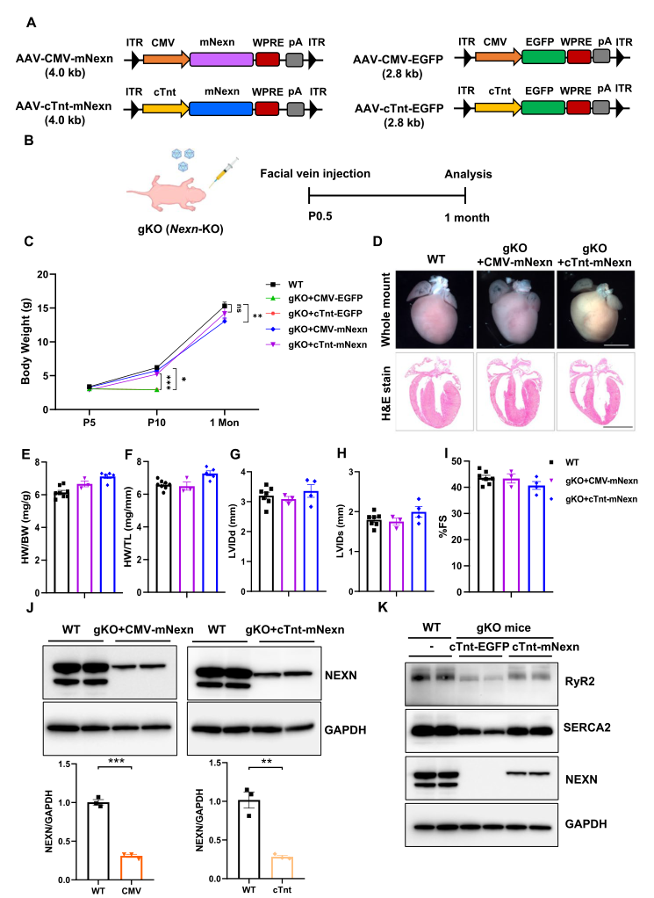

Dilated cardiomyopathy 1CC (CMD1CC) is the NEXN-related form of familial isolated dilated cardiomyopathy. NEXN encodes nexilin, a cardiac and skeletal-muscle F-actin-binding protein built from two actin-binding domains flanking a coiled-coil rod and terminating in an immunoglobulin-superfamily (IGcam) domain. Nexilin was first characterised as a Z-disc protein whose loss destabilises the Z-disc under mechanical load, and later shown to be a component of the cardiomyocyte junctional membrane complex required to initiate transverse (T)-tubule invagination and to couple the T-tubule to the junctional sarcoplasmic reticulum. Which of those two lesions is primary is genuinely unsettled and is curated here as competing mechanistic hypotheses rather than resolved by assertion. The clinical spectrum is strikingly dose-dependent. Heterozygous variants produce an incompletely penetrant, typically adult-onset dilated cardiomyopathy - the reported average age of presentation is near 50 years - in which affected and unaffected carriers coexist within one pedigree; a minority present in infancy, sometimes transiently. Biallelic loss-of-function variants produce a far more severe autosomal-recessive disease that begins in utero, presenting as fetal hydrops, cardiomegaly and intrauterine or neonatal death, with endocardial fibroelastosis as a characteristic autopsy finding. Recent biallelic cases show that this recessive arm is not uniformly lethal: two fetal-onset infants survived to ages 2 and 15 years with persistent but partly improved systolic dysfunction. CMD1CC is what distinguishes NEXN from the other curated familial dilated cardiomyopathies: its lesion is the anchoring of F-actin to the Z-disc and to the junctional membrane, not the sarcomeric motor, the thin-filament regulatory apparatus, the nuclear envelope, protein quality control, or splicing. NEXN is also a minor cause of hypertrophic cardiomyopathy, where ClinGen rates the gene-disease relationship only Limited; for dilated cardiomyopathy it is rated Strong.
Ask a research question about Dilated Cardiomyopathy 1CC. OpenScientist will conduct autonomous deep research using the Disorder Mechanisms Knowledge Base and PubMed literature (typically 10-30 minutes).
Do not include personal health information in your question. Questions and results are cached in your browser's local storage.
name: Dilated Cardiomyopathy 1CC
creation_date: "2026-09-02T00:00:00Z"
synonyms:
- CMD1CC
- dilated cardiomyopathy type 1CC
- cardiomyopathy, dilated, 1CC
- NEXN familial isolated dilated cardiomyopathy
- familial isolated dilated cardiomyopathy caused by mutation in NEXN
- nexilin cardiomyopathy
- NEXN-related dilated cardiomyopathy
description: >-
Dilated cardiomyopathy 1CC (CMD1CC) is the NEXN-related form of familial
isolated dilated cardiomyopathy. NEXN encodes nexilin, a cardiac and
skeletal-muscle F-actin-binding protein built from two actin-binding domains
flanking a coiled-coil rod and terminating in an immunoglobulin-superfamily
(IGcam) domain. Nexilin was first characterised as a Z-disc protein whose loss
destabilises the Z-disc under mechanical load, and later shown to be a
component of the cardiomyocyte junctional membrane complex required to
initiate transverse (T)-tubule invagination and to couple the T-tubule to the
junctional sarcoplasmic reticulum. Which of those two lesions is primary is
genuinely unsettled and is curated here as competing mechanistic hypotheses
rather than resolved by assertion.
The clinical spectrum is strikingly dose-dependent. Heterozygous variants
produce an incompletely penetrant, typically adult-onset dilated
cardiomyopathy - the reported average age of presentation is near 50 years -
in which affected and unaffected carriers coexist within one pedigree; a
minority present in infancy, sometimes transiently. Biallelic loss-of-function
variants produce a far more severe autosomal-recessive disease that begins in
utero, presenting as fetal hydrops, cardiomegaly and intrauterine or neonatal
death, with endocardial fibroelastosis as a characteristic autopsy finding.
Recent biallelic cases show that this recessive arm is not uniformly lethal:
two fetal-onset infants survived to ages 2 and 15 years with persistent but
partly improved systolic dysfunction.
CMD1CC is what distinguishes NEXN from the other curated familial dilated
cardiomyopathies: its lesion is the anchoring of F-actin to the Z-disc and to
the junctional membrane, not the sarcomeric motor, the thin-filament
regulatory apparatus, the nuclear envelope, protein quality control, or
splicing. NEXN is also a minor cause of hypertrophic cardiomyopathy, where
ClinGen rates the gene-disease relationship only Limited; for dilated
cardiomyopathy it is rated Strong.
category: Mendelian
classifications:
harrisons_chapter:
- classification_value: CARDIOVASCULAR
- classification_value: GENETICS_ENVIRONMENT_DISEASE
disease_term:
preferred_term: dilated cardiomyopathy 1CC
term:
id: MONDO:0013147
label: dilated cardiomyopathy 1CC
parents:
- Dilated Cardiomyopathy
- Genetic Disorder
prevalence:
- population: Worldwide
measure_type: UNKNOWN
prevalence_class: NOT_YET_DOCUMENTED
notes: >-
No population-based prevalence estimate exists for the NEXN-specific form of
dilated cardiomyopathy. NEXN is a minority cause: the 2021 ClinGen
evidence-based reappraisal of dilated-cardiomyopathy genes placed it in the
moderate-evidence tier alongside ACTN2 and TNNI3, below the definitive genes
(TTN, LMNA, MYH7) that account for most genotyped familial disease. The
dedicated ClinGen Dilated Cardiomyopathy Gene Curation Expert Panel
subsequently upgraded NEXN to Strong under SOP10 in November 2024, which
raises confidence in causality but supplies no frequency estimate.
evidence:
- reference: PMID:33947203
reference_title: Evidence-Based Assessment of Genes in Dilated Cardiomyopathy.
supports: SUPPORT
evidence_source: HUMAN_CLINICAL
snippet: >-
Seven genes (14%; ACTC1, ACTN2, JPH2, NEXN, TNNI3, TPM1, VCL) including 2
additional ontologies were classified as moderate evidence
explanation: >-
Places NEXN in the moderate-evidence tier of dilated-cardiomyopathy genes,
supporting the statement that it accounts for a small minority of
genotyped familial disease.
inheritance:
- name: Autosomal dominant
description: >-
The common presentation. Heterozygous NEXN variants segregate as an
autosomal-dominant, incompletely penetrant dilated cardiomyopathy of
variable age at onset. In the four-generation Swedish pedigree, seven
heterozygous carriers comprised two with confirmed dilated cardiomyopathy,
three with other cardiac findings and two with no cardiac abnormality at
all.
inheritance_term:
preferred_term: Autosomal dominant inheritance
term:
id: HP:0000006
label: Autosomal dominant inheritance
evidence:
- reference: PMID:35166435
reference_title: >-
Loss of nexilin function leads to a recessive lethal fetal cardiomyopathy
characterized by cardiomegaly and endocardial fibroelastosis.
supports: SUPPORT
evidence_source: HUMAN_CLINICAL
snippet: >-
Clinical examination of seven heterozygote carriers confirmed dilated
cardiomyopathy (two individuals), other cardiac findings (three
individuals), or no cardiac deviations (two individuals), indicating
incomplete penetrance or age-dependent expression of dilated
cardiomyopathy.
explanation: >-
Documents dominant transmission with explicitly incomplete penetrance in a
single NEXN pedigree.
- reference: CGGV:assertion_ffe00b43-a449-4476-b7e0-f24cf6613766-2024-11-15T050000.000Z
supports: SUPPORT
evidence_source: OTHER
snippet: >-
NEXN | HGNC:29557 | dilated cardiomyopathy | MONDO:0005021 | AD | Strong |
SOP10 | Dilated Cardiomyopathy Gene Curation Expert Panel |
2024-11-15T05:00:00.000Z
explanation: >-
ClinGen records the NEXN-dilated cardiomyopathy relationship as autosomal
dominant with Strong validity.
- name: Autosomal recessive
description: >-
Biallelic loss-of-function NEXN variants cause a distinct and far more
severe disease of fetal or neonatal onset, with cardiomegaly, endocardial
fibroelastosis and frequently intrauterine or early postnatal death. Obligate
heterozygous parents in these families are typically cardiologically normal,
so the recessive arm is not simply a more severe expression of the dominant
one.
inheritance_term:
preferred_term: Autosomal recessive inheritance
term:
id: HP:0000007
label: Autosomal recessive inheritance
evidence:
- reference: PMID:35166435
reference_title: >-
Loss of nexilin function leads to a recessive lethal fetal cardiomyopathy
characterized by cardiomegaly and endocardial fibroelastosis.
supports: SUPPORT
evidence_source: HUMAN_CLINICAL
snippet: >-
Homozygous variants in NEXN cause a lethal form of human fetal
cardiomyopathy, only described in two patients before.
explanation: >-
States the recessive mode and its lethal fetal phenotype directly.
- reference: PMID:33949776
reference_title: >-
Childhood onset nexilin dilated cardiomyopathy: A heterozygous and a
homozygous case.
supports: SUPPORT
evidence_source: HUMAN_CLINICAL
snippet: >-
Her parents, both heterozygous carriers, had normal cardiac function and
the family history was normal.
explanation: >-
Shows that the parents of a homozygous fatal neonatal case were
cardiologically unaffected, which is what makes this a genuinely recessive
arm rather than the severe end of a dominant spectrum.
mechanistic_hypotheses:
- hypothesis_group_id: nexn_z_disc_primary
hypothesis_label: Z-disc destabilisation is the primary lesion
status: CANONICAL
description: >-
The founding model. Nexilin is a Z-disc protein that allows the Z-disc to
withstand repeated mechanical loading; loss or dominant-negative expression
destabilises the Z-disc, and the same Z-disc pathology seen in
nexilin-deficient zebrafish is present in myocardium from human NEXN variant
carriers. Retained as CANONICAL because it remains the default reading of
the disease and the one the founding human genetics was interpreted
against - but note that it is contested rather than settled: the
junctional-membrane model recorded below as ALTERNATIVE is supported by
later mouse work whose authors report finding no sarcomeric alteration at
all.
- hypothesis_group_id: nexn_jmc_ttubule_primary
hypothesis_label: Junctional membrane complex and T-tubule failure is the primary lesion
status: ALTERNATIVE
description: >-
The competing model. Conditional and global Nexn knockout mice show that
nexilin binds junctional sarcoplasmic reticulum proteins and is required to
initiate T-tubule invagination, and the authors explicitly report that they
found no sarcomeric alteration - concluding that nexilin is not primarily a
Z-disc protein. A human iPSC-derived cardiomyocyte NEXN knockout
independently shows disordered junctional membrane complexes and abnormal
excitation-contraction coupling. The two models are not fully exclusive:
nexilin may serve both compartments, and species differences (zebrafish
versus mouse) may explain part of the discrepancy.
pathophysiology:
- name: Nexilin Loss of Function
conforms_to: "cardiomyopathy_maladaptive_remodeling#Primary Cardiomyocyte Insult"
biological_scale: MOLECULAR
role: trigger
description: >-
The initiating lesion is a germline NEXN variant that reduces nexilin
abundance or abolishes its normal F-actin-anchoring function. Frameshift and
nonsense alleles are subject to nonsense-mediated decay, so biallelic
carriers approach a true null; in-frame deletions and missense alleles in
the IGcam and actin-binding domains act instead by producing a mislocalised
or non-functional protein, and at least one (p.Gly650del) behaves as a
dominant negative when expressed in zebrafish. This difference in allele
mechanism, rather than variant position alone, is what separates the
dominant and recessive arms of the disease.
genes:
- preferred_term: NEXN
term:
id: hgnc:29557
label: NEXN
molecular_functions:
- preferred_term: actin filament binding
term:
id: GO:0051015
label: actin filament binding
modifier: DECREASED
cell_types:
- preferred_term: Cardiomyocyte
term:
id: CL:0000746
label: cardiac muscle cell
locations:
- preferred_term: Myocardium
term:
id: UBERON:0002349
label: myocardium
downstream:
- target: Z-Disc Destabilization
causal_link_type: DIRECT
hypothesis_groups:
- nexn_z_disc_primary
description: >-
Loss of the nexilin-actin anchor removes the Z-disc's resistance to
repeated mechanical load.
evidence:
- reference: PMID:19881492
reference_title: >-
Nexilin mutations destabilize cardiac Z-disks and lead to dilated
cardiomyopathy.
supports: SUPPORT
evidence_source: MODEL_ORGANISM
snippet: >-
Here we isolated nexilin (encoded by NEXN) as a novel Z-disk protein.
Loss of nexilin in zebrafish led to perturbed Z-disk stability and heart
failure.
explanation: >-
Directly links loss of nexilin to Z-disc destabilisation and consequent
cardiac failure in the model that founded this disease concept.
- target: Junctional Membrane Complex and T-Tubule Failure
causal_link_type: DIRECT
hypothesis_groups:
- nexn_jmc_ttubule_primary
description: >-
Loss of nexilin removes a component of the junctional membrane complex
needed to initiate T-tubule invagination.
evidence:
- reference: PMID:30982350
reference_title: >-
Nexilin Is a New Component of Junctional Membrane Complexes Required for
Cardiac T-Tubule Formation.
supports: SUPPORT
evidence_source: MODEL_ORGANISM
snippet: >-
In vivo and in vitro analyses revealed that NEXN interacted with
junctional sarcoplasmic reticulum proteins, was essential for optimal
calcium transients, and was required for initiation of T-tubule
invagination and formation.
explanation: >-
Establishes the junctional-membrane-complex arm as a direct consequence
of nexilin loss.
evidence:
- reference: PMID:35166435
reference_title: >-
Loss of nexilin function leads to a recessive lethal fetal cardiomyopathy
characterized by cardiomegaly and endocardial fibroelastosis.
supports: SUPPORT
evidence_source: HUMAN_CLINICAL
snippet: >-
RNA sequencing spanning the variant in cDNA blood of heterozygote
individuals revealed nonsense-mediated mRNA decay of the mutated
transcripts.
explanation: >-
Demonstrates in human carriers that a NEXN frameshift allele is degraded
rather than translated, which is the loss-of-function mechanism this node
asserts.
- reference: PMID:19881492
reference_title: >-
Nexilin mutations destabilize cardiac Z-disks and lead to dilated
cardiomyopathy.
supports: SUPPORT
evidence_source: MODEL_ORGANISM
snippet: >-
Expression in zebrafish of nexilin proteins encoded by NEXN mutant alleles
induced Z-disk damage and heart failure, demonstrating a dominant-negative
effect and confirming the disease-causing nature of these mutations.
explanation: >-
Supports the second allele mechanism asserted by this node - that some
NEXN missense and in-frame alleles act as dominant negatives rather than
by simple haploinsufficiency.
- name: Z-Disc Destabilization
biological_scale: CELLULAR
role: mechanism
description: >-
In the Z-disc model, nexilin cross-links and stabilises the actin filaments
anchored at the Z-disc, which is the site at which contractile force
generated by the sarcomere is received and transmitted. Without it the
Z-disc fails progressively under the repetitive load of cardiac contraction,
producing the Z-disc pathology observed both in nexilin-deficient zebrafish
and in myocardium from human NEXN variant carriers, and disrupting the
sarcomeric organisation on which coordinated contraction depends.
cell_types:
- preferred_term: Cardiomyocyte
term:
id: CL:0000746
label: cardiac muscle cell
cellular_components:
- preferred_term: Z disc
term:
id: GO:0030018
label: Z disc
modifier: ABNORMAL
biological_processes:
- preferred_term: Sarcomere organization
term:
id: GO:0045214
label: sarcomere organization
modifier: ABNORMAL
downstream:
- target: Impaired Cardiomyocyte Force Generation
causal_link_type: DIRECT
hypothesis_groups:
- nexn_z_disc_primary
description: >-
A Z-disc that cannot withstand load cannot transmit sarcomeric force,
so contractility falls.
evidence:
- reference: PMID:38114601
reference_title: >-
CRISPR/Cas9-mediated nexilin deficiency interferes with cardiac
contractile function in zebrafish in vivo.
supports: SUPPORT
evidence_source: MODEL_ORGANISM
snippet: >-
We found that Nexn deficient embryos developed significantly reduced
cardiac contractility and under stressed conditions also impaired
skeletal muscle organization whereas skeletal muscle function seemed not
to be affected.
explanation: >-
Connects nexilin deficiency to a measured fall in cardiac contractility
in a constitutive genetic knockout.
evidence:
- reference: PMID:19881492
reference_title: >-
Nexilin mutations destabilize cardiac Z-disks and lead to dilated
cardiomyopathy.
supports: SUPPORT
evidence_source: HUMAN_CLINICAL
snippet: >-
Nexilin mutation carriers showed the same cardiac Z-disk pathology as
observed in nexilin-deficient zebrafish.
explanation: >-
Human myocardium from NEXN variant carriers shows the Z-disc pathology
this node asserts, so the claim is not model-only.
- reference: PMID:30982350
reference_title: >-
Nexilin Is a New Component of Junctional Membrane Complexes Required for
Cardiac T-Tubule Formation.
supports: REFUTE
evidence_source: MODEL_ORGANISM
snippet: >-
our findings reveal that NEXN, rather than being a Z-disk protein as
previously thought, interacts with SR proteins and is required for
initiation of T-tubule invagination and overall T-tubule formation
explanation: >-
The mouse knockout study explicitly contradicts the premise of this node.
Recorded as REFUTE rather than removed, because the competing evidence is
what makes the Z-disc versus junctional-membrane question a live
mechanistic dispute rather than a settled one.
- name: Junctional Membrane Complex and T-Tubule Failure
biological_scale: CELLULAR
role: mechanism
description: >-
In the competing model, nexilin is a component of the cardiomyocyte
junctional membrane complex - the dyad in which the transverse tubule is
apposed to the junctional sarcoplasmic reticulum - and is required to
initiate the sarcolemmal invaginations that become T-tubules during
postnatal development. Without nexilin the T-tubule network fails to form
and the dyad is disorganised, so L-type calcium channel activation no longer
reliably triggers ryanodine-receptor calcium release. This node is supported
in mouse and in human iPSC-derived cardiomyocytes.
cell_types:
- preferred_term: Cardiomyocyte
term:
id: CL:0000746
label: cardiac muscle cell
cellular_components:
- preferred_term: T-tubule
term:
id: GO:0030315
label: T-tubule
modifier: ABNORMAL
biological_processes:
- preferred_term: T-tubule organization
term:
id: GO:0033292
label: T-tubule organization
modifier: DECREASED
downstream:
- target: Impaired Excitation-Contraction Coupling
causal_link_type: DIRECT
hypothesis_groups:
- nexn_jmc_ttubule_primary
description: >-
A disorganised dyad uncouples membrane depolarisation from
calcium-induced calcium release.
evidence:
- reference: PMID:40713745
reference_title: >-
NEXN deficiency leads to dilated cardiomyopathy in human pluripotent
stem cell-derived cardiomyocytes.
supports: SUPPORT
evidence_source: IN_VITRO
snippet: >-
NEXN-deficient cardiomyocytes showed disordered junctional membrane
complexes, abnormal excitation-contraction coupling, increased oxidative
stress and decreased energy metabolism level.
explanation: >-
Shows the junctional-membrane lesion and the excitation-contraction
defect together in a human cardiomyocyte model.
evidence:
- reference: PMID:30982350
reference_title: >-
Nexilin Is a New Component of Junctional Membrane Complexes Required for
Cardiac T-Tubule Formation.
supports: SUPPORT
evidence_source: MODEL_ORGANISM
snippet: >-
These results demonstrated that NEXN is a pivotal component of the
junctional membrane complex and is required for initiation and formation
of T-tubules, thus providing insight into mechanisms underlying
cardiomyopathy in patients with mutations in NEXN.
explanation: >-
States the junctional-membrane-complex and T-tubule role that this node
asserts.
- reference: PMID:40713745
reference_title: >-
NEXN deficiency leads to dilated cardiomyopathy in human pluripotent
stem cell-derived cardiomyocytes.
supports: SUPPORT
evidence_source: IN_VITRO
snippet: >-
We demonstrated that NEXN was one of the important components in
maintaining the structure and function of cardiomyocyte junctional
membrane complexes (JMCs), excitation-contraction coupling and energy
metabolism of cardiomyocytes, while the loss of its function would lead to
DCM.
explanation: >-
Independent human-cell confirmation that the junctional membrane complex
is the compartment affected by NEXN loss.
- name: Impaired Excitation-Contraction Coupling
biological_scale: CELLULAR
role: mechanism
description: >-
Loss of the T-tubule/junctional sarcoplasmic reticulum dyad degrades
calcium-induced calcium release, so the calcium transient that drives each
contraction is reduced or prolonged. This is the point at which the
junctional-membrane arm of the mechanism converges on the same contractile
failure that the Z-disc arm reaches by a structural route.
cell_types:
- preferred_term: Cardiomyocyte
term:
id: CL:0000746
label: cardiac muscle cell
biological_processes:
- preferred_term: Intracellular calcium ion homeostasis
term:
id: GO:0006874
label: intracellular calcium ion homeostasis
modifier: ABNORMAL
- preferred_term: >-
Regulation of cardiac muscle contraction by regulation of the release of
sequestered calcium ion
term:
id: GO:0010881
label: >-
regulation of cardiac muscle contraction by regulation of the release of
sequestered calcium ion
modifier: DECREASED
downstream:
- target: Impaired Cardiomyocyte Force Generation
causal_link_type: DIRECT
description: >-
A smaller or slower calcium transient produces less force per beat.
evidence:
- reference: PMID:30982350
reference_title: >-
Nexilin Is a New Component of Junctional Membrane Complexes Required for
Cardiac T-Tubule Formation.
supports: SUPPORT
evidence_source: MODEL_ORGANISM
snippet: >-
In vivo and in vitro analyses revealed that NEXN interacted with
junctional sarcoplasmic reticulum proteins, was essential for optimal
calcium transients, and was required for initiation of T-tubule
invagination and formation.
explanation: >-
The reported result that nexilin is essential for optimal calcium
transients is the measurement this edge rests on: a degraded calcium
transient is precisely the step by which failed excitation-contraction
coupling becomes reduced force per beat.
evidence:
- reference: PMID:30982350
reference_title: >-
Nexilin Is a New Component of Junctional Membrane Complexes Required for
Cardiac T-Tubule Formation.
supports: SUPPORT
evidence_source: MODEL_ORGANISM
snippet: >-
In vivo and in vitro analyses revealed that NEXN interacted with
junctional sarcoplasmic reticulum proteins, was essential for optimal
calcium transients, and was required for initiation of T-tubule
invagination and formation.
explanation: >-
Directly supports impaired calcium transients as a consequence of nexilin
loss.
- name: Impaired Cardiomyocyte Force Generation
conforms_to: "cardiomyopathy_maladaptive_remodeling#Progressive Contractile Dysfunction"
biological_scale: CELLULAR
role: mechanism
description: >-
Both mechanistic arms converge here. Whether force transmission fails at the
Z-disc or calcium delivery fails at the dyad, the cardiomyocyte generates
less systolic force, and the ventricle compensates by dilating. In the
zebrafish knockout this stage is partially offset by a compensatory
transcriptional response in which sarcomeric myosin, troponin and
tropomyosin transcripts are strongly induced, which may explain why the
CRISPR knockout is milder than the morpholino knockdown.
cell_types:
- preferred_term: Cardiomyocyte
term:
id: CL:0000746
label: cardiac muscle cell
biological_processes:
- preferred_term: Striated muscle contraction
term:
id: GO:0006941
label: striated muscle contraction
modifier: DECREASED
- preferred_term: Regulation of cardiac muscle contraction
term:
id: GO:0055117
label: regulation of cardiac muscle contraction
modifier: ABNORMAL
downstream:
- target: Left Ventricular Dilation and Systolic Dysfunction
causal_link_type: DIRECT
description: >-
Sustained loss of per-beat force drives chamber dilation and wall
thinning.
evidence:
- reference: PMID:26659360
reference_title: >-
Knock-out of nexilin in mice leads to dilated cardiomyopathy and
endomyocardial fibroelastosis.
supports: SUPPORT
evidence_source: MODEL_ORGANISM
snippet: >-
the KO mice developed rapidly progressive cardiomyopathy with left
ventricular dilation and wall thinning and decreased cardiac function
explanation: >-
Records the progression from contractile failure to ventricular dilation
and wall thinning in the nexilin-null mouse.
- target: Endocardial Fibroelastosis
causal_link_type: INDIRECT_UNKNOWN_INTERMEDIATES
description: >-
In the biallelic-null setting, the failing dilated ventricle develops
endocardial thickening with collagen and elastin deposition. The
pathogenesis of this association is not established.
evidence:
- reference: PMID:26659360
reference_title: >-
Knock-out of nexilin in mice leads to dilated cardiomyopathy and
endomyocardial fibroelastosis.
supports: SUPPORT
evidence_source: MODEL_ORGANISM
snippet: >-
At this stage, collagen deposits and some elastin deposits were observed
within the left ventricle cavity, which resembles the features of
endomyocardial fibroelastosis (EFE).
explanation: >-
Places the fibroelastotic change downstream of established contractile
failure and ventricular dilation in the null mouse.
evidence:
- reference: PMID:38114601
reference_title: >-
CRISPR/Cas9-mediated nexilin deficiency interferes with cardiac
contractile function in zebrafish in vivo.
supports: SUPPORT
evidence_source: MODEL_ORGANISM
snippet: >-
Transcripts of numerous essential sarcomeric proteins were massively
induced and may mediate a sarcomere stabilizing function in nexn-/-
knockout embryos.
explanation: >-
Supports the compensatory sarcomeric-transcript induction described in
this node.
- name: Left Ventricular Dilation and Systolic Dysfunction
conforms_to: "cardiomyopathy_maladaptive_remodeling#Ventricular Remodeling"
biological_scale: ORGANISM
role: consequence
description: >-
The defining organ-level lesion: a dilated left or both ventricles with
reduced ejection fraction and wall thinning, not explained by coronary
disease or abnormal loading. In heterozygous adult disease this develops
slowly and may be preceded by years of subclinical mild dilation; in
biallelic disease it is present before birth.
cell_types:
- preferred_term: Cardiomyocyte
term:
id: CL:0000746
label: cardiac muscle cell
locations:
- preferred_term: Left ventricle
term:
id: UBERON:0002084
label: heart left ventricle
downstream:
- target: Heart Failure
causal_link_type: DIRECT
description: >-
Progressive systolic dysfunction produces the clinical heart-failure
syndrome.
evidence:
- reference: PMID:31073128
reference_title: Dilated cardiomyopathy.
supports: SUPPORT
evidence_source: OTHER
snippet: >-
As DCM eventually leads to impaired contractility, standard approaches
to prevent or treat heart failure are the first-line treatment for
patients with DCM.
explanation: >-
States the progression from dilated cardiomyopathy to clinical heart
failure that this edge asserts.
evidence:
- reference: PMID:40161564
reference_title: >-
Nexilin mutations, a cause of chronic heart failure: A state-of-the-art
review starting from a clinical case.
supports: SUPPORT
evidence_source: HUMAN_CLINICAL
snippet: >-
during the current evaluation, transthoracic echocardiography revealed a
dilated left ventricle with a severely reduced LVEF of 30%
explanation: >-
A documented adult NEXN heterozygote with the dilated, poorly contracting
ventricle this node describes.
- name: Endocardial Fibroelastosis
biological_scale: TISSUE
role: consequence
description: >-
Thickening of the endocardium by collagen and elastin, characteristic of the
biallelic fetal and neonatal form and reported at autopsy in homozygous
fetuses and neonates as well as in nexilin-null mice. It is not a feature of
the adult heterozygous presentation, which makes it a discriminating finding
between the two arms of the disease. One mouse study reinterpreted the
intraventricular masses as mural thrombi rather than true fibroelastosis, so
the murine correlate is less secure than the human autopsy finding.
locations:
- preferred_term: Endocardium
term:
id: UBERON:0002165
label: endocardium
evidence:
- reference: PMID:35166435
reference_title: >-
Loss of nexilin function leads to a recessive lethal fetal cardiomyopathy
characterized by cardiomegaly and endocardial fibroelastosis.
supports: SUPPORT
evidence_source: HUMAN_CLINICAL
snippet: >-
Moreover, autopsy and histology staining declared that they presented with
cardiomegaly and endocardial fibroelastosis.
explanation: >-
Human autopsy confirmation of endocardial fibroelastosis in homozygous
NEXN fetuses.
- reference: PMID:33949776
reference_title: >-
Childhood onset nexilin dilated cardiomyopathy: A heterozygous and a
homozygous case.
supports: SUPPORT
evidence_source: HUMAN_CLINICAL
snippet: >-
Homozygous c.1174C > T,p.(R392*) class 4 variants in the NEXN gene were
found via WES. Microscopic investigation showed endomyocardial
fibroelastosis.
explanation: >-
A second, independent homozygous NEXN neonate with the same
histopathological finding.
- name: Heart Failure
conforms_to: "cardiomyopathy_maladaptive_remodeling#Structural Cardiac Impairment and Heart Failure"
biological_scale: ORGANISM
role: consequence
description: >-
The clinical endpoint shared with every other familial dilated
cardiomyopathy: exertional dyspnoea and reduced exercise capacity in adults,
and inotrope-dependent circulatory failure in affected neonates. Outcome
tracks zygosity and allele class rather than any NEXN-specific prognostic
feature, and ranges from complete recovery of systolic function to death in
the first weeks of life.
locations:
- preferred_term: Myocardium
term:
id: UBERON:0002349
label: myocardium
evidence:
- reference: PMID:33949776
reference_title: >-
Childhood onset nexilin dilated cardiomyopathy: A heterozygous and a
homozygous case.
supports: SUPPORT
evidence_source: HUMAN_CLINICAL
snippet: >-
These patients show a new clinical spectrum of pediatric cardiac disease
seen in heterozygous and homozygous NEXN variants, ranging from mild,
transient DCM to a severe, fatal neonatal DCM.
explanation: >-
Captures the range of clinical outcome described by this node, anchored to
zygosity.
phenotypes:
- name: Dilated cardiomyopathy
category: Cardiovascular
description: >-
The cardinal phenotype in both the dominant and the recessive arm.
phenotype_term:
preferred_term: Dilated cardiomyopathy
term:
id: HP:0001644
label: Dilated cardiomyopathy
clinical_course: PROGRESSIVE
frequency: VERY_FREQUENT
evidence:
- reference: PMID:33949776
reference_title: >-
Childhood onset nexilin dilated cardiomyopathy: A heterozygous and a
homozygous case.
supports: SUPPORT
evidence_source: HUMAN_CLINICAL
snippet: >-
Pathogenic heterozygous NEXN variants are associated with progressive
dilated cardiomyopathy (DCM) usually presenting around 50 years of age.
explanation: >-
States the phenotype and its typical adult age at onset in heterozygotes.
- name: Left ventricular dilatation
category: Cardiovascular
description: >-
Enlargement of the left ventricular cavity, detected by echocardiography or
cardiac MRI, which may be present with preserved systolic function in mildly
affected heterozygous carriers.
phenotype_term:
preferred_term: Left ventricular dilatation
term:
id: HP:4000141
label: Left ventricular dilatation
evidence:
- reference: PMID:40161564
reference_title: >-
Nexilin mutations, a cause of chronic heart failure: A state-of-the-art
review starting from a clinical case.
supports: SUPPORT
evidence_source: HUMAN_CLINICAL
snippet: >-
during the current evaluation, transthoracic echocardiography revealed a
dilated left ventricle with a severely reduced LVEF of 30%
explanation: >-
Echocardiographic left ventricular dilation in a NEXN heterozygote.
sequelae:
- target: Reduced left ventricular ejection fraction
description: >-
Chamber dilation accompanies the fall in ejection fraction.
- name: Reduced left ventricular ejection fraction
category: Cardiovascular
description: >-
Systolic impairment ranging from mild to severe. In reported NEXN cases LVEF
has been as low as 26% at birth in biallelic disease and 30% in an adult
heterozygote, and is partly reversible on guideline-directed therapy.
phenotype_term:
preferred_term: Reduced left ventricular ejection fraction
term:
id: HP:0012664
label: Reduced left ventricular ejection fraction
evidence:
- reference: PMID:39183344
reference_title: >-
Biallelic NEXN variants and fetal onset dilated cardiomyopathy: two
independent case reports and revision of literature.
supports: SUPPORT
evidence_source: HUMAN_CLINICAL
snippet: >-
Postnatally, a DCM with severely reduced systolic function was confirmed
and required medical treatment.
explanation: >-
Severely reduced systolic function documented in biallelic NEXN infants.
- name: Congestive heart failure
category: Cardiovascular
description: >-
Symptomatic heart failure, presenting as exertional dyspnoea in adults and
as inotrope-dependent circulatory failure in affected neonates.
phenotype_term:
preferred_term: Congestive heart failure
term:
id: HP:0001635
label: Congestive heart failure
evidence:
- reference: PMID:40161564
reference_title: >-
Nexilin mutations, a cause of chronic heart failure: A state-of-the-art
review starting from a clinical case.
supports: SUPPORT
evidence_source: HUMAN_CLINICAL
snippet: >-
The case involves a 63-year-old male who presented with HF symptoms at
moderate exertion.
explanation: >-
Symptomatic heart failure in a genotyped NEXN patient.
- name: Cardiomegaly
category: Cardiovascular
description: >-
Gross cardiac enlargement, the dominant autopsy finding in homozygous
fetuses.
phenotype_term:
preferred_term: Cardiomegaly
term:
id: HP:0001640
label: Cardiomegaly
evidence:
- reference: PMID:35166435
reference_title: >-
Loss of nexilin function leads to a recessive lethal fetal cardiomyopathy
characterized by cardiomegaly and endocardial fibroelastosis.
supports: SUPPORT
evidence_source: HUMAN_CLINICAL
snippet: >-
The affected family had uneventful pregnancies until week 23-24, followed
by fetal death at week 24-30, characterized by cardiomegaly and endocardial
fibroelastosis.
explanation: >-
Cardiomegaly recorded at autopsy in the three affected homozygous fetuses.
- name: Endocardial fibroelastosis
category: Cardiovascular
description: >-
Endocardial thickening by collagen and elastin. Reported in homozygous
fetuses and neonates and in nexilin-null mice; not described in adult
heterozygous disease.
phenotype_term:
preferred_term: Endocardial fibroelastosis
term:
id: HP:0001706
label: Endocardial fibroelastosis
evidence:
- reference: PMID:33949776
reference_title: >-
Childhood onset nexilin dilated cardiomyopathy: A heterozygous and a
homozygous case.
supports: SUPPORT
evidence_source: HUMAN_CLINICAL
snippet: >-
Homozygous c.1174C > T,p.(R392*) class 4 variants in the NEXN gene were
found via WES. Microscopic investigation showed endomyocardial
fibroelastosis.
explanation: >-
Histological confirmation in a homozygous NEXN neonate.
- name: Hydrops fetalis
category: Prenatal
description: >-
Fetal fluid accumulation secondary to intrauterine cardiac failure,
reported in biallelic disease and often the presenting sign.
phenotype_term:
preferred_term: Hydrops fetalis
term:
id: HP:0001789
label: Hydrops fetalis
evidence:
- reference: PMID:39183344
reference_title: >-
Biallelic NEXN variants and fetal onset dilated cardiomyopathy: two
independent case reports and revision of literature.
supports: SUPPORT
evidence_source: HUMAN_CLINICAL
snippet: >-
We describe two male infants with prenatal diagnosis of dilated
cardiomyopathy with impaired ventricular contractility. One of the
patients showed hydrops and polyhydramnios.
explanation: >-
Hydrops as a presenting feature of biallelic NEXN fetal cardiomyopathy.
- name: Stillbirth
category: Prenatal
description: >-
Recurrent intrauterine fetal death from week 24 onward in the homozygous
form, the presentation that led to identification of the recessive arm.
evidence:
- reference: PMID:35166435
reference_title: >-
Loss of nexilin function leads to a recessive lethal fetal cardiomyopathy
characterized by cardiomegaly and endocardial fibroelastosis.
supports: SUPPORT
evidence_source: HUMAN_CLINICAL
snippet: >-
In a Swedish, four-generation, non-consanguineous family comprising 42
individuals, one female had three consecutive pregnancies with intrauterine
fetal deaths caused by a lethal form of dilated cardiomyopathy.
explanation: >-
Three consecutive intrauterine fetal deaths attributed to biallelic NEXN
disease.
notes: >-
Deliberately left without a bound `phenotype_term`. HP:0003826 Stillbirth
sits under Mortality/Aging rather than under HP:0000118 Phenotypic
abnormality, so it is outside the PhenotypeTerm enum root and fails term
validation. Same HPO structural gap recorded on the pregnancy phenotypes in
issue #7837.
- name: Neonatal death
category: Neonatal
description: >-
Death in the first weeks of life from refractory systolic failure in the
homozygous form. Not universal: two later-reported biallelic infants
survived to ages 2 and 15 years.
evidence:
- reference: PMID:33949776
reference_title: >-
Childhood onset nexilin dilated cardiomyopathy: A heterozygous and a
homozygous case.
supports: SUPPORT
evidence_source: HUMAN_CLINICAL
snippet: >-
Postnatally she required ventilation and continuous inotropic support for
left ventricle systolic dysfunction. She died after 2 weeks when therapy
was withdrawn.
explanation: >-
Neonatal death in a homozygous NEXN case.
- reference: PMID:39183344
reference_title: >-
Biallelic NEXN variants and fetal onset dilated cardiomyopathy: two
independent case reports and revision of literature.
supports: REFUTE
evidence_source: HUMAN_CLINICAL
snippet: >-
Unlike the unfavorable prognosis described for biallelic NEXN variants, we
observed in both our patients a favorable clinical course over time.
explanation: >-
Refutes the inference that biallelic NEXN disease is uniformly fatal in
the neonatal period, which is why the phenotype is not annotated as
obligate.
notes: >-
Deliberately left without a bound `phenotype_term`. HP:0003811 Neonatal
death sits under Mortality/Aging rather than under HP:0000118 Phenotypic
abnormality, so it is outside the PhenotypeTerm enum root and fails term
validation, in the same way as the Stillbirth phenotype above.
- name: Atrioventricular valve regurgitation
category: Cardiovascular
description: >-
Mitral and tricuspid regurgitation secondary to annular dilation, reported
as severe in biallelic neonatal disease.
phenotype_term:
preferred_term: Atrioventricular valve regurgitation
term:
id: HP:0034376
label: Atrioventricular valve regurgitation
evidence:
- reference: PMID:39183344
reference_title: >-
Biallelic NEXN variants and fetal onset dilated cardiomyopathy: two
independent case reports and revision of literature.
supports: SUPPORT
evidence_source: HUMAN_CLINICAL
snippet: >-
Both atrioventricular valves showed thickened leaflets with preserved
mobility and severe regurgitation.
explanation: >-
Documents severe atrioventricular valve regurgitation in a biallelic NEXN
neonate.
- name: Myocardial fibrosis
category: Cardiovascular
description: >-
Extensive left ventricular fibrosis on cardiac magnetic resonance imaging in
adult heterozygous disease.
phenotype_term:
preferred_term: Myocardial fibrosis
term:
id: HP:0001685
label: Myocardial fibrosis
evidence:
- reference: PMID:40161564
reference_title: >-
Nexilin mutations, a cause of chronic heart failure: A state-of-the-art
review starting from a clinical case.
supports: SUPPORT
evidence_source: HUMAN_CLINICAL
snippet: >-
cardiac magnetic resonance imaging indicated a non-inflammatory,
non-infiltrative dilated cardiomyopathy with extensive LV fibrosis
explanation: >-
Imaging evidence of myocardial fibrosis in a genotyped NEXN patient.
- name: Arrhythmia
category: Cardiovascular
description: >-
Rhythm disturbance is reported in a minority of NEXN carriers and is
curated cautiously. Several published arrhythmic cases carry a second
allele in a conduction gene, so the cleanest evidence is the biallelic
patient in whom early-onset arrhythmia occurred with no other conduction
gene allele to account for it. This entry does not claim arrhythmia as a
core feature, and the mechanism is not modeled in the pathograph.
phenotype_term:
preferred_term: Arrhythmia
term:
id: HP:0011675
label: Arrhythmia
frequency: OCCASIONAL
evidence:
- reference: PMID:39183344
reference_title: >-
Biallelic NEXN variants and fetal onset dilated cardiomyopathy: two
independent case reports and revision of literature.
supports: SUPPORT
evidence_source: HUMAN_CLINICAL
snippet: >-
Furthermore, in P1 early onset arrhythmia was not associated with the
presence of other gene alleles that could be responsible for an altered
conduction system.
explanation: >-
Reports early-onset arrhythmia in a homozygous NEXN patient and
explicitly excludes a second conduction-gene allele as the explanation,
which is what makes this attributable to the NEXN genotype rather than to
a co-inherited channel variant.
genetic:
- name: NEXN
notes: >-
NEXN (1p31.1) encodes nexilin, an F-actin-binding protein of cardiac and
skeletal muscle comprising two actin-binding domains, a central coiled-coil
region and a C-terminal immunoglobulin-superfamily (IGcam) domain.
Deletion mapping in mice indicates that the C-terminal actin-binding and
IGcam regions are indispensable. Reported disease alleles include
protein-truncating variants subject to nonsense-mediated decay
(c.1302del p.Ile435Serfs*3; c.1174C>T p.Arg392*), in-frame deletions
(c.1949_1951del p.Gly650del; c.1579_1584del p.Glu527_Glu528del) and
missense changes. Variant classification is allele-specific and should be
refreshed against current ClinVar, ClinGen and gnomAD records rather than
taken from the primary reports, several of which predate present ACMG/AMP
practice.
gene_term:
preferred_term: NEXN
term:
id: hgnc:29557
label: NEXN
relationship_type: CAUSATIVE
case_fractions:
- population: Han Chinese idiopathic dilated cardiomyopathy cohort
case_fraction_percent: 4.8
cohort_size: 118
notes: >-
Share of the pathogenic and likely pathogenic variants identified in a
prospective target-sequencing cohort of 118 idiopathic dilated
cardiomyopathy patients, in which 41 patients carried 40 such variants.
This is a gene's share of a clinically ascertained sequencing cohort, not
a population prevalence, and it is ancestry- and ascertainment-dependent.
NEXN was tied with RBM20 at 4.8%, far behind TTN at 31.0%.
evidence:
- reference: PMID:32041989
reference_title: >-
Genetic Basis and Genotype-Phenotype Correlations in Han Chinese
Patients with Idiopathic Dilated Cardiomyopathy.
supports: SUPPORT
evidence_source: HUMAN_CLINICAL
snippet: >-
TTN truncating variants were predominant, with a frequency of 31.0%,
followed by variants of LMNA (14.3%), RBM20 (4.8%), and NEXN (4.8%).
explanation: >-
Quantifies the NEXN share of identified variants in this cohort and its
rank relative to the major dilated-cardiomyopathy genes.
evidence:
- reference: CGGV:assertion_ffe00b43-a449-4476-b7e0-f24cf6613766-2024-11-15T050000.000Z
supports: SUPPORT
evidence_source: OTHER
snippet: >-
NEXN | HGNC:29557 | dilated cardiomyopathy | MONDO:0005021 | AD | Strong |
SOP10 | Dilated Cardiomyopathy Gene Curation Expert Panel |
2024-11-15T05:00:00.000Z
explanation: >-
The current ClinGen gene-disease validity assertion for NEXN in dilated
cardiomyopathy, rated Strong by the disease-specific expert panel.
- reference: PMID:19881492
reference_title: >-
Nexilin mutations destabilize cardiac Z-disks and lead to dilated
cardiomyopathy.
supports: SUPPORT
evidence_source: HUMAN_CLINICAL
snippet: >-
To evaluate the role of nexilin in human heart failure, we performed a
genetic association study on individuals with dilated cardiomyopathy and
found several mutations in NEXN associated with the disease.
explanation: >-
The founding human genetic association between NEXN and dilated
cardiomyopathy.
- reference: PMID:35166435
reference_title: >-
Loss of nexilin function leads to a recessive lethal fetal cardiomyopathy
characterized by cardiomegaly and endocardial fibroelastosis.
supports: SUPPORT
evidence_source: HUMAN_CLINICAL
snippet: >-
Whole-exome sequencing and variant analysis revealed that the affected
fetuses were homozygous for a NEXN variant
(NM_144573:c.1302del;p.(Ile435Serfs*3)).
explanation: >-
Identifies a specific biallelic truncating allele segregating with lethal
fetal disease.
- reference: PMID:33949776
reference_title: >-
Childhood onset nexilin dilated cardiomyopathy: A heterozygous and a
homozygous case.
supports: SUPPORT
evidence_source: HUMAN_CLINICAL
snippet: >-
Genetic diagnostics revealed a paternally derived, heterozygous
1949_1951del class 4 variant in NEXN.
explanation: >-
Documents the recurrent heterozygous in-frame 1949_1951del (p.Gly650del)
allele and its transmission from an affected parent.
biochemical:
- name: NT-proBNP
biomarker_term:
preferred_term: N-terminal fragment brain natriuretic protein
term:
id: NCIT:C88524
label: N-Terminal Fragment Brain Natriuretic Protein
presence: Elevated in proportion to heart failure severity
notes: >-
Natriuretic peptide is not a NEXN-specific marker and does not report the
nexilin lesion. It is curated because it is the measurement that
discriminated severity among heterozygous carriers of one NEXN family
during cascade evaluation - high in the carrier who became a transplant
candidate, normal in the carrier who improved on medical and device therapy
- so it is the practical surveillance readout for the incompletely
penetrant dominant arm.
readouts:
- target: Heart Failure
relationship: READOUT_OF
direction: THRESHOLD_DEPENDENT
description: >-
Circulating NT-proBNP rises with ventricular wall stress and tracks the
heart-failure endpoint of the pathograph rather than any upstream
nexilin-specific step.
evidence:
- reference: PMID:35166435
reference_title: >-
Loss of nexilin function leads to a recessive lethal fetal cardiomyopathy
characterized by cardiomegaly and endocardial fibroelastosis.
supports: SUPPORT
evidence_source: HUMAN_CLINICAL
snippet: >-
The examination comprised echocardiography including estimation of
ejection fraction, electrocardiography (ECG), blood pressure, and
N‐terminal prohormone of brain natriuretic peptide (NT‐pro‐BNP)
measurement.
explanation: >-
Establishes NT-proBNP as part of the cascade evaluation protocol applied
to heterozygous NEXN carriers in the index family.
- reference: PMID:35166435
reference_title: >-
Loss of nexilin function leads to a recessive lethal fetal cardiomyopathy
characterized by cardiomegaly and endocardial fibroelastosis.
supports: SUPPORT
evidence_source: HUMAN_CLINICAL
snippet: >-
Individual III:2 was considered to be a candidate for a heart transplant
due to severe signs of heart failure (NYHA class 3A) and high NT‐proBNP
and ejection fraction of 15%.
explanation: >-
Shows the marker tracking disease severity in a NEXN carrier, elevated in
the individual whose failure progressed to transplant assessment.
diagnosis:
- name: Echocardiography
description: >-
First-line imaging: demonstrates ventricular dilation, wall thinning and
reduced systolic function, and is the modality by which fetal and neonatal
disease is detected prenatally and at birth. Serial studies are what
establish the transient or progressive character of an individual carrier's
disease.
diagnosis_term:
preferred_term: echocardiography
term:
id: NCIT:C16525
label: Echocardiography Test
evidence:
- reference: PMID:39183344
reference_title: >-
Biallelic NEXN variants and fetal onset dilated cardiomyopathy: two
independent case reports and revision of literature.
supports: SUPPORT
evidence_source: HUMAN_CLINICAL
snippet: >-
Post-natal echocardiography confirmed the absence of structural heart
disease and detected biventricular hypertrophy and LV dilation.
explanation: >-
Echocardiography establishing the cardiomyopathy diagnosis in a NEXN
infant.
- name: Cardiac Magnetic Resonance Imaging
description: >-
Detects mild ventricular dilation and myocardial fibrosis not evident on
echocardiography, and is what revealed persistent mild dilation in a NEXN
heterozygote whose echocardiographic function had normalised.
diagnosis_term:
preferred_term: cardiac magnetic resonance imaging
term:
id: NCIT:C16809
label: Magnetic Resonance Imaging
evidence:
- reference: PMID:33949776
reference_title: >-
Childhood onset nexilin dilated cardiomyopathy: A heterozygous and a
homozygous case.
supports: SUPPORT
evidence_source: HUMAN_CLINICAL
snippet: >-
Presently, at 11 years of age, he has normal cardiac function with signs
of mild DCM on cardiac MRI.
explanation: >-
Cardiac MRI detecting residual disease after echocardiographic recovery.
- name: Cardiomyopathy Gene Panel or Exome Sequencing
description: >-
Molecular confirmation. NEXN should be on any cardiomyopathy panel used in
paediatric or familial dilated cardiomyopathy; both published paediatric
series argue explicitly for its inclusion. Exome or genome sequencing is
appropriate where a panel is negative or recessive disease is suspected, and
parental testing is needed to establish phase in biallelic cases.
diagnosis_term:
preferred_term: genetic testing
term:
id: NCIT:C15709
label: Genetic Testing
evidence:
- reference: PMID:33949776
reference_title: >-
Childhood onset nexilin dilated cardiomyopathy: A heterozygous and a
homozygous case.
supports: SUPPORT
evidence_source: HUMAN_CLINICAL
snippet: >-
These patients support the inclusion of the NEXN gene in the investigation
of pediatric patients with DCM, even in cases with transient DCM.
explanation: >-
Direct recommendation to include NEXN in paediatric dilated
cardiomyopathy testing.
- reference: PMID:39183344
reference_title: >-
Biallelic NEXN variants and fetal onset dilated cardiomyopathy: two
independent case reports and revision of literature.
supports: SUPPORT
evidence_source: HUMAN_CLINICAL
snippet: >-
It might be worthy to consider the inclusion of the NEXN gene sequencing
in the investigation of pediatric patients with DCM.
explanation: >-
Independent second recommendation for NEXN sequencing in paediatric
dilated cardiomyopathy.
treatments:
- name: Guideline-Directed Heart Failure Pharmacotherapy
description: >-
There is no NEXN-specific disease-modifying therapy and no trial has
enrolled on NEXN genotype, so management is the generic
reduced-ejection-fraction regimen: renin-angiotensin system inhibition or an
angiotensin receptor-neprilysin inhibitor, an evidence-based beta-blocker, a
mineralocorticoid receptor antagonist and an SGLT2 inhibitor as age and
clinical status permit, with diuretics for congestion. Reported NEXN
patients have improved on this regimen, but those are single-case responses,
not genotype-specific efficacy estimates.
therapeutic_modality: SMALL_MOLECULE
treatment_term:
preferred_term: Pharmacotherapy
term:
id: NCIT:C15986
label: Pharmacotherapy
therapeutic_agent:
- preferred_term: ACE inhibitor
term:
id: NCIT:C247
label: ACE Inhibitor
- preferred_term: beta-blocker
term:
id: NCIT:C29576
label: Beta-Adrenergic Antagonist
- preferred_term: mineralocorticoid receptor antagonist (spironolactone as the class exemplar)
term:
id: NCIT:C840
label: Spironolactone
- preferred_term: angiotensin receptor-neprilysin inhibitor (sacubitril/valsartan)
term:
id: NCIT:C190796
label: Angiotensin Receptor-Neprilysin Inhibitor
- preferred_term: SGLT2 inhibitor
term:
id: NCIT:C98083
label: SGLT2 Inhibitor
target_mechanisms:
- target: Left Ventricular Dilation and Systolic Dysfunction
treatment_effect: INHIBITS
description: >-
Neurohormonal blockade interrupts the maladaptive amplifier between
cardiomyocyte injury and adverse ventricular remodeling. The mechanism is
class-level and is not modified by NEXN genotype.
evidence:
- reference: PMID:31073128
reference_title: Dilated cardiomyopathy.
supports: SUPPORT
evidence_source: OTHER
snippet: >-
As DCM eventually leads to impaired contractility, standard approaches
to prevent or treat heart failure are the first-line treatment for
patients with DCM.
explanation: >-
Establishes standard heart-failure therapy as first-line management for
dilated cardiomyopathy.
evidence:
- reference: PMID:42475150
reference_title: >-
Heart Failure With Reduced Ejection Fraction Update: A Review Of Clinical
Trials and New Therapeutic Considerations.
supports: SUPPORT
evidence_source: OTHER
snippet: "beta-blockers, and mineralocorticoid receptor antagonists, which improve survival and reduce hospitalizations"
explanation: >-
Names the neurohormonal-blockade components of contemporary
reduced-ejection-fraction therapy and their outcome benefit. None of the
cited trials enrolled on NEXN genotype.
- reference: PMID:42475150
reference_title: >-
Heart Failure With Reduced Ejection Fraction Update: A Review Of Clinical
Trials and New Therapeutic Considerations.
supports: SUPPORT
evidence_source: OTHER
snippet: "The use of sodium-glucose cotransporter-2 (SGLT2) inhibitors and intravenous iron therapy has also become integral to treatment, showing benefits in reducing mortality and improving symptoms."
explanation: >-
Supports inclusion of an SGLT2 inhibitor among the agents listed on this
treatment.
- name: Cardiac Resynchronization Therapy with Defibrillator
description: >-
Device therapy for systolic dysfunction with conduction delay, plus
defibrillator protection against sudden death. Included because it is the
documented management of a NEXN heterozygote whose ejection fraction rose
from 30% to 42% afterwards; the indication follows general heart-failure
criteria, not genotype.
action_category: THERAPEUTIC
therapeutic_modality: DEVICE
treatment_term:
preferred_term: cardiac resynchronization therapy with defibrillator
term:
id: NCIT:C80436
label: Cardiac Resynchronization Therapy
target_mechanisms:
- target: Left Ventricular Dilation and Systolic Dysfunction
treatment_effect: MODULATES
description: >-
Resynchronizing ventricular contraction improves mechanical efficiency in
a dilated, dyssynchronous ventricle. It does not act on the nexilin
lesion.
evidence:
- reference: PMID:40161564
reference_title: >-
Nexilin mutations, a cause of chronic heart failure: A state-of-the-art
review starting from a clinical case.
supports: SUPPORT
evidence_source: HUMAN_CLINICAL
snippet: >-
State-of-the-art HF treatment was initiated, including cardiac
resynchronization therapy with defibrillator support. Following
treatment, the patient's symptoms resolved, and LVEF improved to 42%.
explanation: >-
Records resynchronization therapy in a genotyped NEXN patient with
subsequent improvement in ejection fraction.
evidence:
- reference: PMID:40161564
reference_title: >-
Nexilin mutations, a cause of chronic heart failure: A state-of-the-art
review starting from a clinical case.
supports: SUPPORT
evidence_source: HUMAN_CLINICAL
snippet: >-
State-of-the-art HF treatment was initiated, including cardiac
resynchronization therapy with defibrillator support. Following treatment,
the patient's symptoms resolved, and LVEF improved to 42%.
explanation: >-
The single documented use of this therapy in a NEXN patient.
- name: Heart Transplantation
description: >-
The endpoint therapy once medical and device management fail, and the only
intervention that removes the nexilin-deficient myocardium. It is reported
across both arms of this disease: an adult heterozygote assessed for
transplant at an ejection fraction of 15%, and the published biallelic and
childhood-onset series in which mechanical circulatory support or
transplantation is the recorded endpoint. Durable mechanical circulatory
support with a ventricular assist device serves as the bridge where a donor
organ is not immediately available, and is the recorded endpoint for at
least one heterozygous NEXN patient; it is described here rather than
curated as a separate treatment because the cached sources record it only
in a summary endpoint table without a quotable finding of its own.
action_category: THERAPEUTIC
therapeutic_modality: SURGERY
treatment_term:
preferred_term: heart transplantation
term:
id: NCIT:C15246
label: Heart Transplantation
target_mechanisms:
- target: Heart Failure
treatment_effect: MODULATES
description: >-
Transplantation replaces the failing ventricle outright. It does not
correct the nexilin lesion in any other tissue, and it acts at the
terminal node of the pathograph rather than on the causal chain.
evidence:
- reference: PMID:35166435
reference_title: >-
Loss of nexilin function leads to a recessive lethal fetal
cardiomyopathy characterized by cardiomegaly and endocardial
fibroelastosis.
supports: SUPPORT
evidence_source: HUMAN_CLINICAL
snippet: >-
Individual III:2 was considered to be a candidate for a heart
transplant due to severe signs of heart failure (NYHA class 3A) and
high NT‐proBNP and ejection fraction of 15%.
explanation: >-
A genotyped NEXN heterozygote referred for transplant assessment on the
strength of the heart-failure endpoint this link attaches to.
evidence:
- reference: PMID:33949776
reference_title: >-
Childhood onset nexilin dilated cardiomyopathy: A heterozygous and a
homozygous case.
supports: SUPPORT
evidence_source: HUMAN_CLINICAL
snippet: >-
EFE is rare in adults, but is seen in 25% of all pediatric DCM patients
requiring heart transplantation
explanation: >-
Cited in the NEXN case report to situate this disease's endocardial
fibroelastosis phenotype within the pediatric population that comes to
transplantation, which is why transplantation is curated as a treatment
for the biallelic arm and not only for the adult dominant arm.
animal_models:
- name: Nexn global and cardiomyocyte-specific knockout mouse
species: Mouse
genotype: Nexn null (Sox2-cre global deletion) and cardiomyocyte-specific conditional deletion
publication: PMID:30982350
description: >-
The model that identified the junctional membrane complex arm of the
mechanism. Global and cardiomyocyte-restricted deletion both produce rapidly
progressive dilated cardiomyopathy with perinatal lethality, and the
cardiomyocyte-specific arm shows the lesion is cell-autonomous.
modeled_mechanisms:
- target: Junctional Membrane Complex and T-Tubule Failure
relationship: RECAPITULATES
fidelity: HIGH
description: >-
Demonstrates that nexilin binds junctional sarcoplasmic reticulum proteins
and is required to initiate T-tubule invagination.
limitations: >-
A complete null is a model of the human biallelic arm, not of the common
adult heterozygous disease; heterozygous mice show at most mild transient
dilation. The study also failed to reproduce the sarcomeric alteration
reported in zebrafish, which is the source of the mechanistic dispute
rather than an independent confirmation of either model.
readouts:
- name: T-tubule initiation and formation
target: Junctional Membrane Complex and T-Tubule Failure
direction: ABOLISHED
interpretation: >-
Loss of nexilin prevents the sarcolemmal invagination that initiates
T-tubule formation.
evidence:
- reference: PMID:30982350
reference_title: >-
Nexilin Is a New Component of Junctional Membrane Complexes Required
for Cardiac T-Tubule Formation.
supports: SUPPORT
evidence_source: MODEL_ORGANISM
snippet: >-
These results demonstrated that NEXN is a pivotal component of the
junctional membrane complex and is required for initiation and
formation of T-tubules, thus providing insight into mechanisms
underlying cardiomyopathy in patients with mutations in NEXN.
explanation: >-
Reports the T-tubule formation failure that this readout records.
evidence:
- reference: PMID:30982350
reference_title: >-
Nexilin Is a New Component of Junctional Membrane Complexes Required for
Cardiac T-Tubule Formation.
supports: SUPPORT
evidence_source: MODEL_ORGANISM
snippet: >-
Global and cardiomyocyte-specific loss of Nexn in mice resulted in a
rapidly progressive dilated cardiomyopathy.
explanation: >-
Supports treating this knockout as informative for the NEXN mechanism,
since both global and cardiomyocyte-restricted deletion reproduce the
disease.
- target: Z-Disc Destabilization
relationship: FAILS_TO_RECAPITULATE
fidelity: LOW
description: >-
The mouse knockout did not reproduce the sarcomeric and Z-disc alteration
reported in nexilin-deficient zebrafish and in human carrier myocardium.
limitations: >-
The negative finding is the basis for the competing junctional-membrane
model, but it is a single-laboratory result in one species, and the human
myocardial Z-disc pathology it fails to reproduce is a positive human
observation. It does not by itself retire the Z-disc model.
evidence:
- reference: PMID:30982350
reference_title: >-
Nexilin Is a New Component of Junctional Membrane Complexes Required for
Cardiac T-Tubule Formation.
supports: SUPPORT
evidence_source: MODEL_ORGANISM
snippet: >-
our findings reveal that NEXN, rather than being a Z-disk protein as
previously thought, interacts with SR proteins and is required for
initiation of T-tubule invagination and overall T-tubule formation
explanation: >-
The authors state directly that the Z-disc characterisation was not
supported by their model, which is the failure to recapitulate this link
records.
- name: Constitutive Nexn knockout mouse
species: Mouse
genotype: Nexn homozygous constitutive knockout
publication: PMID:26659360
description: >-
An independent constitutive null that reproduces the human biallelic
phenotype closely, including the endocardial fibroelastosis seen at autopsy
in homozygous human fetuses.
modeled_mechanisms:
- target: Endocardial Fibroelastosis
relationship: RECAPITULATES
fidelity: MODERATE
description: >-
Nexilin-null mice develop intraventricular collagen and elastin deposition
resembling endomyocardial fibroelastosis, the same lesion found in human
biallelic cases.
limitations: >-
A later study of a separate Nexn null line reinterpreted comparable
intraventricular masses as mural thrombi containing fibrin and lacking
elastic fibres, so the identity of the murine lesion is contested even
though the human autopsy finding is secure.
readouts:
- name: Intraventricular collagen and elastin deposition
target: Endocardial Fibroelastosis
direction: INCREASED
interpretation: >-
Histological correlate of the fibroelastotic lesion in the null mouse.
evidence:
- reference: PMID:26659360
reference_title: >-
Knock-out of nexilin in mice leads to dilated cardiomyopathy and
endomyocardial fibroelastosis.
supports: SUPPORT
evidence_source: MODEL_ORGANISM
snippet: >-
At this stage, collagen deposits and some elastin deposits were
observed within the left ventricle cavity, which resembles the
features of endomyocardial fibroelastosis (EFE).
explanation: >-
Reports the histological measurement behind this readout.
evidence:
- reference: PMID:26659360
reference_title: >-
Knock-out of nexilin in mice leads to dilated cardiomyopathy and
endomyocardial fibroelastosis.
supports: SUPPORT
evidence_source: MODEL_ORGANISM
snippet: >-
At day 6, the KO mice developed a fulminant DCM phenotype characterized
by dilated ventricular chambers and systolic dysfunction.
explanation: >-
Supports treating this null as informative for the severe biallelic arm
of the human disease.
- target: Left Ventricular Dilation and Systolic Dysfunction
relationship: RECAPITULATES
fidelity: HIGH
description: >-
Rapidly progressive left ventricular dilation, wall thinning and systolic
failure, with death by postnatal day 8.
limitations: >-
The time course is compressed into days rather than decades, and models
the biallelic rather than the heterozygous human arm.
evidence:
- reference: PMID:26659360
reference_title: >-
Knock-out of nexilin in mice leads to dilated cardiomyopathy and
endomyocardial fibroelastosis.
supports: SUPPORT
evidence_source: MODEL_ORGANISM
snippet: >-
After postnatal day 6, the survival of the Nexn KO mice decreased
dramatically and all of the animals died by day 8.
explanation: >-
Records the lethality of the null that accompanies the dilated
phenotype.
- name: Nexn G645del knock-in mouse
species: Mouse
genotype: Nexn G645del homozygous (equivalent to human NEXN p.Gly650del)
publication: PMID:38783323
description: >-
A CRISPR knock-in of the murine equivalent of the recurrent human
p.Gly650del allele, and the only NEXN model that carries a specific patient
variant rather than a null. It is also the model in which AAV-mediated
nexilin replacement was tested.
modeled_mechanisms:
- target: Left Ventricular Dilation and Systolic Dysfunction
relationship: RECAPITULATES
fidelity: HIGH
description: >-
Homozygous G645del mice develop progressive dilated cardiomyopathy
reproducing the clinicopathological features of human G650del carriers.
limitations: >-
Human G650del disease is heterozygous and adult-onset; the mouse models it
in homozygous form, so the allele is right but the dose is not.
readouts:
- name: Cardiac function after systemic AAV-Nexn delivery
target: Left Ventricular Dilation and Systolic Dysfunction
direction: RESTORED
interpretation: >-
A single neonatal AAV-Nexn injection restored cardiac function and
extended survival, which is the strongest available evidence that the
phenotype is driven by nexilin deficiency and is reversible.
evidence:
- reference: PMID:38783323
reference_title: >-
In vivo rescue of genetic dilated cardiomyopathy by systemic delivery
of nexilin.
supports: SUPPORT
evidence_source: MODEL_ORGANISM
snippet: >-
we demonstrated that a single injection of AAV-Nexn was capable to
restore the functions of cardiomyocytes and extended the lifespan of
Nexn knockout and G645del mice.
explanation: >-
Reports the rescue measurement behind this readout.
evidence:
- reference: PMID:38783323
reference_title: >-
In vivo rescue of genetic dilated cardiomyopathy by systemic delivery of
nexilin.
supports: SUPPORT
evidence_source: MODEL_ORGANISM
snippet: >-
homozygous G645del mice resulted in a progressive DCM and recapitulated
the clinicopathological features that have been observed in patients
with the corresponding G650del mutation.
explanation: >-
Supports treating this knock-in as informative for the human G650del
allele.
- name: CRISPR nexn knockout zebrafish
species: Zebrafish
genotype: nexn-/- constitutive CRISPR/Cas9 knockout
publication: PMID:38114601
description: >-
A constitutive genetic knockout in the species in which nexilin was first
linked to cardiomyopathy. It is milder than the earlier morpholino
knockdown, and transcriptome profiling suggests compensatory induction of
sarcomeric transcripts as the reason.
modeled_mechanisms:
- target: Impaired Cardiomyocyte Force Generation
relationship: RECAPITULATES
fidelity: MODERATE
description: >-
Nexn-deficient embryos show significantly reduced cardiac contractility.
limitations: >-
The phenotype is milder than the morpholino knockdown that founded the
Z-disc model, and the knockout fish survive to adulthood and are fertile,
so the model does not capture the lethality of human biallelic disease.
Compensation appears to be responsible, which limits its use for measuring
the size of the primary defect.
readouts:
- name: Cardiac contractility
target: Impaired Cardiomyocyte Force Generation
direction: DECREASED
interpretation: >-
Contractile function falls in the constitutive knockout even at baseline.
evidence:
- reference: PMID:38114601
reference_title: >-
CRISPR/Cas9-mediated nexilin deficiency interferes with cardiac
contractile function in zebrafish in vivo.
supports: SUPPORT
evidence_source: MODEL_ORGANISM
snippet: >-
We found that Nexn deficient embryos developed significantly reduced
cardiac contractility and under stressed conditions also impaired
skeletal muscle organization whereas skeletal muscle function seemed
not to be affected.
explanation: >-
Reports the contractility measurement behind this readout.
evidence:
- reference: PMID:38114601
reference_title: >-
CRISPR/Cas9-mediated nexilin deficiency interferes with cardiac
contractile function in zebrafish in vivo.
supports: SUPPORT
evidence_source: MODEL_ORGANISM
snippet: >-
Nexilin (NEXN) plays a crucial role in stabilizing the sarcomeric Z-disk
of striated muscle fibers and, when mutated, leads to dilated
cardiomyopathy in humans.
explanation: >-
Supports treating the zebrafish knockout as informative for the human
disease mechanism.
experimental_models:
- name: NEXN-knockout human iPSC-derived cardiomyocytes
experimental_model_type: IPSC_DERIVED_MODEL
description: >-
A CRISPR/Cas9 homozygous NEXN knockout in human induced pluripotent stem
cells differentiated to cardiomyocytes. It is the only human-cell system in
which the NEXN lesion has been characterised, and it independently supports
the junctional-membrane arm of the mechanism while adding oxidative-stress
and energy-metabolism findings not reported in the animal models.
publication: PMID:40713745
modeled_mechanisms:
- target: Junctional Membrane Complex and T-Tubule Failure
relationship: RECAPITULATES
fidelity: MODERATE
description: >-
NEXN-null human cardiomyocytes show disordered junctional membrane
complexes and abnormal excitation-contraction coupling.
limitations: >-
iPSC-derived cardiomyocytes are immature and have a rudimentary T-tubule
network even when wild type, so a T-tubule phenotype is harder to size in
this system than in adult myocardium. The model is a complete knockout and
so speaks to the biallelic arm.
readouts:
- name: Junctional membrane complex organization
target: Junctional Membrane Complex and T-Tubule Failure
direction: ALTERED
interpretation: >-
Junctional membrane complexes are disorganised in NEXN-null human
cardiomyocytes.
evidence:
- reference: PMID:40713745
reference_title: >-
NEXN deficiency leads to dilated cardiomyopathy in human pluripotent
stem cell-derived cardiomyocytes.
supports: SUPPORT
evidence_source: IN_VITRO
snippet: >-
NEXN-deficient cardiomyocytes showed disordered junctional membrane
complexes, abnormal excitation-contraction coupling, increased
oxidative stress and decreased energy metabolism level.
explanation: >-
Reports the structural and functional measurements behind this
readout.
evidence:
- reference: PMID:40713745
reference_title: >-
NEXN deficiency leads to dilated cardiomyopathy in human pluripotent
stem cell-derived cardiomyocytes.
supports: SUPPORT
evidence_source: IN_VITRO
snippet: >-
A human NEXN homozygous knockout cardiomyocyte model was established by
combining CRISPR/Cas9 gene editing technology and human induced
pluripotent stem cells (hiPSCs)-directed differentiation technology.
explanation: >-
Establishes the model system whose findings this link records.
discussions:
- discussion_id: nexn_z_disc_versus_jmc_primary_lesion
kind: KNOWLEDGE_GAP
status: OPEN
prompt: >-
Is the primary cardiomyocyte lesion in NEXN cardiomyopathy Z-disc
destabilisation or failure of the junctional membrane complex and T-tubule
network?
attaches_to:
- "pathophysiology#Z-Disc Destabilization"
- "pathophysiology#Junctional Membrane Complex and T-Tubule Failure"
- "mechanistic_hypotheses#nexn_z_disc_primary"
- "mechanistic_hypotheses#nexn_jmc_ttubule_primary"
rationale: >-
The two published models are not merely different emphases; the mouse study
explicitly denies the Z-disc characterisation, while the founding zebrafish
work and human carrier myocardium show Z-disc pathology directly. The answer
determines which readout should be used to assess a candidate therapy and
what a variant's position within the protein predicts, so it is not a purely
taxonomic question. Species difference is a plausible reconciliation, as is
a dual role for nexilin in both compartments, but neither has been tested.
proposed_experiments:
- experiment_id: exp_cmd1cc_human_myocardium_ultrastructure
name: Z-disc versus dyad ultrastructure in genotyped human myocardium
description: >-
Electron microscopy and immunolocalisation on explanted or biopsy
myocardium from NEXN variant carriers, scoring Z-disc integrity and
T-tubule/junctional sarcoplasmic reticulum apposition in the same samples,
stratified by allele class and zygosity. Both lesions present together
would support a dual role and retire the framing of the two hypotheses as
exclusive; a lesion confined to one compartment would settle which is
primary, and preserved Z-disc ultrastructure alongside disrupted dyads
would refute the Z-disc-primary model in the tissue that matters.
would_support:
- "pathophysiology#Junctional Membrane Complex and T-Tubule Failure"
would_refute:
- "pathophysiology#Z-Disc Destabilization"
evidence:
- reference: PMID:30982350
reference_title: >-
Nexilin Is a New Component of Junctional Membrane Complexes Required for
Cardiac T-Tubule Formation.
supports: SUPPORT
evidence_source: MODEL_ORGANISM
snippet: >-
our findings reveal that NEXN, rather than being a Z-disk protein as
previously thought, interacts with SR proteins and is required for
initiation of T-tubule invagination and overall T-tubule formation
explanation: >-
The explicit denial of the Z-disc characterisation that puts the two
models in direct conflict and defines this gap.
- reference: PMID:19881492
reference_title: >-
Nexilin mutations destabilize cardiac Z-disks and lead to dilated
cardiomyopathy.
supports: SUPPORT
evidence_source: HUMAN_CLINICAL
snippet: >-
Nexilin mutation carriers showed the same cardiac Z-disk pathology as
observed in nexilin-deficient zebrafish.
explanation: >-
The human observation on the other side of the dispute, which is why the
mouse negative result does not close the question.
- discussion_id: nexn_models_are_all_biallelic_nulls
kind: HUMAN_MODEL_MISMATCH
status: OPEN
prompt: >-
Do the available NEXN model systems, all of which are complete nulls or
homozygous knock-ins, tell us anything about the common human disease, which
is heterozygous and adult-onset?
attaches_to:
- "animal_models#Mouse"
- "animal_models#Zebrafish"
- "pathophysiology#Left Ventricular Dilation and Systolic Dysfunction"
rationale: >-
Every published NEXN model reproduces the rare biallelic arm: mouse nulls
die within days, the G645del knock-in is homozygous, and the human iPSC line
is a homozygous knockout. Heterozygous mice show at most mild transient
dilation that was absent on follow-up at 3 and 10 months. The clinically
dominant presentation - an incompletely penetrant dilated cardiomyopathy
appearing near age 50 - therefore has no model at all, and the mechanism
curated here is extrapolated to it from null systems. That extrapolation is
the weakest link in this entry, and it also means the AAV rescue result,
however striking, was obtained in a disease arm that is not the one most
patients have.
proposed_experiments:
- experiment_id: exp_cmd1cc_aged_heterozygous_knockin
name: Aged heterozygous Nexn knock-in cohort with haemodynamic stress
description: >-
Longitudinal echocardiography in heterozygous Nexn G645del mice aged
beyond 12 months, with and without pressure-overload or pregnancy stress,
to test whether an adult-onset heterozygous phenotype emerges when the
model is aged and loaded rather than assessed in youth. Late-onset
dilation would give the dominant human arm its first model and support the
second-hit reading of its incomplete penetrance; normal function in aged,
stressed heterozygotes would indicate that the murine heterozygous state
does not model human dominant NEXN disease at all.
would_support:
- "pathophysiology#Left Ventricular Dilation and Systolic Dysfunction"
evidence:
- reference: PMID:38783323
reference_title: >-
In vivo rescue of genetic dilated cardiomyopathy by systemic delivery of
nexilin.
supports: SUPPORT
evidence_source: MODEL_ORGANISM
snippet: >-
homozygous G645del mice resulted in a progressive DCM and recapitulated
the clinicopathological features that have been observed in patients with
the corresponding G650del mutation.
explanation: >-
The closest model to a patient allele is still homozygous, which is the
mismatch this discussion records.
- reference: PMID:33949776
reference_title: >-
Childhood onset nexilin dilated cardiomyopathy: A heterozygous and a
homozygous case.
supports: SUPPORT
evidence_source: HUMAN_CLINICAL
snippet: >-
Pathogenic heterozygous NEXN variants are associated with progressive
dilated cardiomyopathy (DCM) usually presenting around 50 years of age.
explanation: >-
Establishes that the common human presentation is heterozygous and
adult-onset, which is the arm no model reproduces.
notes: >-
Scope decision (issues #10633 and #9865). Curated as a standalone
`kb/disorders/` Disease entry rather than as a `has_subtypes` entry on
`Dilated Cardiomyopathy`, on three grounds. First, gene-disease validity: the
ClinGen Dilated Cardiomyopathy Gene Curation Expert Panel rates NEXN Strong
under SOP10 as of November 2024, an upgrade from the moderate tier recorded in
the 2021 reappraisal - and ACTN2, still in that moderate tier, already has its
own entry as `Dilated Cardiomyopathy 1AA`. Second, mechanism: NEXN is the
F-actin anchoring lesion, at the Z-disc and at the junctional membrane
complex, and no other member of the `Familial Dilated Cardiomyopathy`
grouping carries a T-tubule biogenesis failure.
Third, clinical distinctness: the zygosity-dependent split between an
incompletely penetrant adult dominant disease and a fetal-onset recessive
disease with endocardial fibroelastosis is not a feature of any sibling entry,
and it changes both the differential and the counselling.
MONDO:0013147 is a direct child of MONDO:0700335, so this entry satisfies the
verified parent-child relationship that the `Familial Dilated Cardiomyopathy`
grouping's MONDO mapping asserts of every member, and it carries HP:0001644
plus `conforms_to` edges into
`cardiomyopathy_maladaptive_remodeling`, which are that grouping's two
NECESSARY criteria. It is a member of that grouping.
What was deliberately not done. No subtype decomposition into "dominant" and
"recessive" forms: MONDO does not split them, both arms are the same gene and
the same convergent mechanism, and the difference is captured by two
`inheritance` blocks plus zygosity-specific phenotypes. No `datasets` block -
no NEXN-specific expression or cohort dataset was identified, and a
gene-symbol search would have surfaced whatever NEXN is best known for rather
than this disease. No `clinical_trials` block - no interventional trial has
enrolled on NEXN genotype, and the AAV-Nexn work is preclinical, so it is
curated as an animal-model readout rather than as a therapy. No prevalence
rate: the only quantitative figures available are gene shares of clinically
ascertained sequencing cohorts, which are diagnostic yields and not population
rates.
Deep-research provenance. The Falcon/Edison report
(`research/Dilated_Cardiomyopathy_1CC-deep-research-falcon.md`) passed
`just preflight-dr ... MONDO:0013147 --strict` with NEXN mentioned 48 times
and was used as a lead for identifying primary literature. Its suggested HPO
bindings were not used as given: HP:0004308, offered as "Ventricular
dilatation", is in fact "Ventricular arrhythmia", and HP:0001622, offered as
"Premature death", is "Premature birth". Every term in this entry was
re-derived and checked against the ontology.
GeneReviews scope. NEXN has no gene-specific GeneReviews chapter; the
applicable resource is the disease-level "Dilated Cardiomyopathy Overview"
(PMID:20301486), tagged accordingly in `references`. Its indexed PubMed
record is content_type abstract_only and carries only the chapter's
four-point purpose statement, not the Clinical Characteristics, Management or
Genetic Counseling sections, so section-by-section GeneReviews mining is not
possible from the cache and no snippet is quoted from it. This follows the
Dilated_Cardiomyopathy_1E pattern rather than the Dilated_Cardiomyopathy_1JJ
one: 1JJ quotes two clauses of that purpose statement as evidence, and while
those are exact substrings of the cached body, a statement of what a chapter
sets out to cover is not a finding about this disease. The clinical baseline
for this entry is therefore built from the primary NEXN cohort, pedigree and
case-report literature cited throughout.
Review follow-ups accepted and declined (PR review of 2026-09-03). Added on
review: heart transplantation as the endpoint therapy, NT-proBNP as the
cascade-surveillance biomarker, and an OCCASIONAL arrhythmia phenotype.
Declined: a standalone ventricular assist device treatment, because the only
NEXN-specific record of it in the cached sources is a run-together summary
endpoint table with no quotable finding, so it is described inside the
transplantation entry instead; and the peripartum second-hit observation,
because the homozygous sisters it rests on come from a 2013 report that is
not in the reference cache, and the claim would have had to be sourced from
the deep-research narrative rather than from a verifiable quote.
references:
- reference: PMID:19881492
title: >-
Nexilin mutations destabilize cardiac Z-disks and lead to dilated
cardiomyopathy.
findings: []
- reference: PMID:30982350
title: >-
Nexilin Is a New Component of Junctional Membrane Complexes Required for
Cardiac T-Tubule Formation.
findings: []
- reference: PMID:26659360
title: >-
Knock-out of nexilin in mice leads to dilated cardiomyopathy and
endomyocardial fibroelastosis.
findings: []
- reference: PMID:35166435
title: >-
Loss of nexilin function leads to a recessive lethal fetal cardiomyopathy
characterized by cardiomegaly and endocardial fibroelastosis.
findings: []
- reference: PMID:33949776
title: >-
Childhood onset nexilin dilated cardiomyopathy: A heterozygous and a
homozygous case.
findings: []
- reference: PMID:39183344
title: >-
Biallelic NEXN variants and fetal onset dilated cardiomyopathy: two
independent case reports and revision of literature.
findings: []
- reference: PMID:38783323
title: >-
In vivo rescue of genetic dilated cardiomyopathy by systemic delivery of
nexilin.
findings: []
- reference: PMID:38114601
title: >-
CRISPR/Cas9-mediated nexilin deficiency interferes with cardiac contractile
function in zebrafish in vivo.
findings: []
- reference: PMID:40713745
title: >-
NEXN deficiency leads to dilated cardiomyopathy in human pluripotent stem
cell-derived cardiomyocytes.
findings: []
- reference: PMID:40161564
title: >-
Nexilin mutations, a cause of chronic heart failure: A state-of-the-art
review starting from a clinical case.
findings: []
- reference: PMID:33947203
title: Evidence-Based Assessment of Genes in Dilated Cardiomyopathy.
findings: []
- reference: CGGV:assertion_ffe00b43-a449-4476-b7e0-f24cf6613766-2024-11-15T050000.000Z
title: NEXN / dilated cardiomyopathy (Strong)
findings: []
- reference: PMID:20301486
title: Dilated Cardiomyopathy Overview.
tags:
- GeneReviews
findings: []
Deep research results are used as seeds for research; they do not undergo the same validation as the main records and may contain errors. How we use deep research.
Record notes
Scope decision (issues #10633 and #9865). Curated as a standalone `kb/disorders/` Disease entry rather than as a `has_subtypes` entry on `Dilated Cardiomyopathy`, on three grounds. First, gene-disease validity: the ClinGen Dilated Cardiomyopathy Gene Curation Expert Panel rates NEXN Strong under SOP10 as of November 2024, an upgrade from the moderate tier recorded in the 2021 reappraisal - and ACTN2, still in that moderate tier, already has its own entry as `Dilated Cardiomyopathy 1AA`. Second, mechanism: NEXN is the F-actin anchoring lesion, at the Z-disc and at the junctional membrane complex, and no other member of the `Familial Dilated Cardiomyopathy` grouping carries a T-tubule biogenesis failure. Third, clinical distinctness: the zygosity-dependent split between an incompletely penetrant adult dominant disease and a fetal-onset recessive disease with endocardial fibroelastosis is not a feature of any sibling entry, and it changes both the differential and the counselling. MONDO:0013147 is a direct child of MONDO:0700335, so this entry satisfies the verified parent-child relationship that the `Familial Dilated Cardiomyopathy` grouping's MONDO mapping asserts of every member, and it carries HP:0001644 plus `conforms_to` edges into `cardiomyopathy_maladaptive_remodeling`, which are that grouping's two NECESSARY criteria. It is a member of that grouping. What was deliberately not done. No subtype decomposition into "dominant" and "recessive" forms: MONDO does not split them, both arms are the same gene and the same convergent mechanism, and the difference is captured by two `inheritance` blocks plus zygosity-specific phenotypes. No `datasets` block - no NEXN-specific expression or cohort dataset was identified, and a gene-symbol search would have surfaced whatever NEXN is best known for rather than this disease. No `clinical_trials` block - no interventional trial has enrolled on NEXN genotype, and the AAV-Nexn work is preclinical, so it is curated as an animal-model readout rather than as a therapy. No prevalence rate: the only quantitative figures available are gene shares of clinically ascertained sequencing cohorts, which are diagnostic yields and not population rates. Deep-research provenance. The Falcon/Edison report (`research/Dilated_Cardiomyopathy_1CC-deep-research-falcon.md`) passed `just preflight-dr ... MONDO:0013147 --strict` with NEXN mentioned 48 times and was used as a lead for identifying primary literature. Its suggested HPO bindings were not used as given: HP:0004308, offered as "Ventricular dilatation", is in fact "Ventricular arrhythmia", and HP:0001622, offered as "Premature death", is "Premature birth". Every term in this entry was re-derived and checked against the ontology. GeneReviews scope. NEXN has no gene-specific GeneReviews chapter; the applicable resource is the disease-level "Dilated Cardiomyopathy Overview" (PMID:20301486), tagged accordingly in `references`. Its indexed PubMed record is content_type abstract_only and carries only the chapter's four-point purpose statement, not the Clinical Characteristics, Management or Genetic Counseling sections, so section-by-section GeneReviews mining is not possible from the cache and no snippet is quoted from it. This follows the Dilated_Cardiomyopathy_1E pattern rather than the Dilated_Cardiomyopathy_1JJ one: 1JJ quotes two clauses of that purpose statement as evidence, and while those are exact substrings of the cached body, a statement of what a chapter sets out to cover is not a finding about this disease. The clinical baseline for this entry is therefore built from the primary NEXN cohort, pedigree and case-report literature cited throughout. Review follow-ups accepted and declined (PR review of 2026-09-03). Added on review: heart transplantation as the endpoint therapy, NT-proBNP as the cascade-surveillance biomarker, and an OCCASIONAL arrhythmia phenotype. Declined: a standalone ventricular assist device treatment, because the only NEXN-specific record of it in the cached sources is a run-together summary endpoint table with no quotable finding, so it is described inside the transplantation entry instead; and the peripartum second-hit observation, because the homozygous sisters it rests on come from a 2013 report that is not in the reference cache, and the claim would have had to be sourced from the deep-research narrative rather than from a verifiable quote.
Create: Dilated_Cardiomyopathy_1CC · 2026-09-02T23:48:25Z · View source
Curated NEXN-related dilated cardiomyopathy 1CC (MONDO:0013147) as a standalone Disease entry after an explicit lump/split decision (issues #10633, #9865); added it as a member of the Familial_Dilated_Cardiomyopathy grouping and deleted the consumed stub. Split decision rested on ClinGen rating NEXN Strong for DCM under SOP10 (2024-11-15) - above the moderate tier ACTN2 occupies while already holding its own entry as CMD1AA - on a mechanism absent from every existing member (F-actin anchoring at the Z-disc and at the junctional membrane complex, reaching contractile failure via T-tubule biogenesis failure), and on a zygosity split no sibling has (incompletely penetrant adult dominant disease versus fetal-onset recessive disease with endocardial fibroelastosis). The Z-disc versus junctional-membrane dispute is curated as two competing mechanistic_hypotheses with a KNOWLEDGE_GAP discussion rather than resolved by assertion, including a REFUTE evidence item where the mouse study explicitly denies the Z-disc characterisation. A second HUMAN_MODEL_MISMATCH discussion records that every published NEXN model is a biallelic null or homozygous knock-in while the common human disease is heterozygous and adult-onset. The Falcon/Edison deep-research report passed preflight-dr --strict (NEXN mentioned 48 times) and was used only as a lead: its suggested HP:0004308 is Ventricular arrhythmia not Ventricular dilatation, HP:0001622 is Premature birth not Premature death, NCIT:C16502 is Diagnostic Imaging Testing not Echocardiography, and NCIT:C16810 is Magnetic Resonance Spectroscopy not MRI - all four were rejected and re-derived. Validated: just validate (schema + terms) passed; 67/67 snippets verified against the reference cache; check-duplicate-keys, check-entity-refs, check-causal-targets, check-qualifier-terms, check-enum-values all OK; validate-disorders passed; validate-grouping and check-groupings passed with all fourteen members still satisfying the NECESSARY criteria.
Question: You are an expert researcher providing comprehensive, well-cited information.
Provide detailed information focusing on: 1. Key concepts and definitions with current understanding 2. Recent developments and latest research (prioritize 2023-2024 sources) 3. Current applications and real-world implementations 4. Expert opinions and analysis from authoritative sources 5. Relevant statistics and data from recent studies
Format as a comprehensive research report with proper citations. Include URLs and publication dates where available. Always prioritize recent, authoritative sources and provide specific citations for all major claims.
Please provide a comprehensive research report on Dilated Cardiomyopathy 1CC covering all of the disease characteristics listed below. This report will be used to populate a disease knowledge base entry. Be thorough and cite primary literature (PMID preferred) for all claims.
For each section, suggested databases/resources are listed. These are the first places you should search for information on each topic.
Search first: OMIM, Orphanet, ICD-10/ICD-11, MeSH, PubMed
Search first: PubMed, Cochrane Library, UpToDate, clinical guidelines, ClinVar, ClinGen, GWAS Catalog, PheGenI, CTD, CDC, WHO, epidemiological databases
Search first: PubMed, Cochrane Library, clinical trial databases, GWAS Catalog, gnomAD, WHO, CDC, nutrition databases
Search first: CTD, PubMed, PheGenI, GxE databases
Search first: HPO (Human Phenotype Ontology), OMIM, Orphanet, PubMed, clinicaltrials.gov, MedDRA, SNOMED CT, DECIPHER, LOINC
For each phenotype, provide: - Phenotype type: symptoms, clinical signs, physical manifestations, behavioral changes, or laboratory abnormalities
For symptoms/signs: HPO, OMIM, Orphanet, PubMed For behavioral changes: HPO, DSM, RDoC (Research Domain Criteria), PubMed For laboratory abnormalities: LOINC, SNOMED CT, LabTests Online, PubMed - Phenotype characteristics: Search first: OMIM, Orphanet, HPO, PubMed - Age of symptom onset (neonatal, childhood, adult-onset, late-onset) - Symptom severity (mild, moderate, severe, variable) - Symptom progression (stable, progressive, episodic, fluctuating) - Frequency among affected individuals (percentage or qualitative) - Quality of life impact: Effects on daily functioning and well-being (per-phenotype when possible) Search first: EQ-5D database, SF-36, WHO QOL databases, PubMed - Suggest HPO (Human Phenotype Ontology) terms for each phenotype
Search first: OMIM, ClinVar, HGMD, Ensembl, NCBI Gene
Search first: ENCODE, Roadmap Epigenomics, MethBase, DiseaseMeth
Search first: DECIPHER, ClinVar, ECARUCA, UCSC Genome Browser
Search first: CTD (Comparative Toxicogenomics Database), TOXNET, PubMed, EPA databases
Search first: CDC databases, WHO, PubMed, NHANES
Search first: NCBI Taxonomy, ViPR, BV-BRC, MicrobeDB, GIDEON
Present this section as an ordered causal chain first, then the detail below. Open with a numbered sequence of mechanistic steps running from the initiating lesion (mutation, exposure, infection) to the clinical manifestation, one step per line, each naming what it causes next. State the causal verb explicitly ("leads to", "results in") and say where a step is inferred rather than demonstrated. Where the mechanism branches, show the branch. The categories below are a checklist of what to cover within those steps, not the organizing structure — a step may draw on several of them, and a category may contribute to several steps.
Search first: KEGG, Reactome, WikiPathways, PathBank, BioCyc
Search first: Gene Ontology (GO), Reactome, KEGG, PubMed
Search first: UniProt, PDB (Protein Data Bank), InterPro, Pfam, AlphaFold
Search first: KEGG, BioCyc, HMDB (Human Metabolome Database), BRENDA
Search first: ImmPort, Immunome Database, IEDB, Gene Ontology
Search first: PubMed, Gene Ontology, Reactome
Search first: BRENDA, UniProt, KEGG, OMIM, PubMed
Search first: ENCODE, Roadmap Epigenomics, MethBase, DiseaseMeth
For each mechanism, describe: - The causal chain from initial trigger to clinical manifestation - Which mechanisms are upstream vs downstream - What cell types and biological processes are involved - Suggest GO terms for biological processes and CL terms for cell types
Search first: Uberon, FMA (Foundational Model of Anatomy), OMIM, HPO, ICD-11, MeSH, SNOMED CT
Search first: Uberon, Human Protein Atlas, Cell Ontology, Human Cell Atlas, CellMarker, PanglaoDB
Search first: Gene Ontology (Cellular Component), UniProt, Human Protein Atlas
Search first: OMIM, Orphanet, HPO, PubMed
Search first: Disease registries, longitudinal cohort databases, natural history studies, PubMed, Orphanet, OMIM
Search first: Orphanet, CDC, WHO, GBD (Global Burden of Disease), national registries, SEER, disease registries
Search first: GTR (Genetic Testing Registry), GeneReviews, ClinGen
For each treatment, suggest NCIT (NCI Thesaurus) clinical-intervention terms where applicable.
Search first: CDC vaccine schedules, WHO immunization, FDA vaccine database
Search first: CDC, WHO, behavioral intervention databases, Cochrane Library
Search first: NSGC resources, ACMG guidelines, GeneReviews
Search first: Clinical guidelines, FDA approvals, PubMed
Search first: NCBI Taxonomy
Search first: VBO (Vertebrate Breed Ontology)
Search first: NCBI Gene
Structure your response as a comprehensive narrative organized by the sections above. For each section, provide: - Factual content with specific details (numbers, percentages, gene names, variant nomenclature) - Ontology term suggestions (HPO, GO, CL, UBERON, CHEBI, NCIT, MONDO) where applicable - Evidence citations with PMIDs - Direct quotes from abstracts to support key claims - Clear indication when information is not available or not applicable for this disease
This report will be used to populate a disease knowledge base entry with: - Pathophysiology descriptions with causal chains - Gene/protein annotations (HGNC, GO terms) - Phenotype associations (HP terms) with frequencies - Cell type involvement (CL terms) - Anatomical locations (UBERON terms) - Chemical entities (CHEBI terms) - Treatment annotations (NCIT terms) - Evidence items with PMIDs and exact abstract quotes - Epidemiology, prognosis, diagnostic, and prevention information - Animal model descriptions with phenotype recapitulation details
Dilated cardiomyopathy 1CC (DCM1CC) is a rare genetic cardiomyopathy caused by disease-associated variants in NEXN, encoding nexilin, an F-actin-binding protein important to cardiomyocyte Z-disc and junctional-membrane-complex integrity. Monoallelic variants usually produce variably penetrant, often adult-onset autosomal-dominant DCM; biallelic loss-of-function variants produce an autosomal-recessive spectrum ranging from fetal/neonatal lethal cardiomyopathy with endomyocardial fibroelastosis to survivable childhood disease. Open Targets maps the disorder to MONDO:0013147 and NEXN (ENSG00000162614), with the original DCM report indexed as PMID 19881492. (OpenTargets Search: Dilated Cardiomyopathy 1CC, klauke2017highproportionof pages 17-18)
The evidence base is small: family reports, case series, selected DCM sequencing cohorts, and engineered models predominate. Consequently, subtype-specific prevalence, survival, sex ratio, penetrance, treatment-response rates, and quality-of-life estimates are unavailable. General DCM evidence is identified explicitly below and should not be mistaken for NEXN-specific evidence.
The following table provides a compact knowledge-base representation.
| Knowledge-base field | Curated summary | Ontology suggestions | Evidence type |
|---|---|---|---|
| Identity / identifiers | Dilated cardiomyopathy 1CC (DCM1CC), a rare NEXN-associated genetic cardiomyopathy. MONDO: MONDO:0013147. Subtype-specific OMIM, Orphanet, ICD-10/11, and MeSH identifiers were not verified in the available evidence; general DCM codes should not be treated as subtype-specific. (OpenTargets Search: Dilated Cardiomyopathy 1CC) | MONDO:0013147; HP:0001644 Dilated cardiomyopathy | Aggregated disease-resource evidence |
| Causal gene / inheritance | NEXN (nexilin F-actin binding protein; ENSG00000162614). Heterozygous variants can cause autosomal-dominant, incompletely penetrant DCM; biallelic loss-of-function variants cause autosomal-recessive fetal, neonatal, or childhood cardiomyopathy that is often more severe. Seven heterozygotes in one family included 2 with DCM, 3 with other cardiac findings, and 2 without abnormalities. (OpenTargets Search: Dilated Cardiomyopathy 1CC, johansson2022lossofnexilin pages 1-2) | NEXN; HP:0000006 Autosomal dominant inheritance; HP:0000007 Autosomal recessive inheritance; HP:0003829 Incomplete penetrance | Human families and disease-target resource |
| Hallmark phenotype | Left-ventricular or biventricular dilation with systolic dysfunction; clinical manifestations may include heart failure, fetal hydrops, cardiomegaly, arrhythmia, mitral/atrioventricular-valve regurgitation, and endomyocardial fibroelastosis. Severity ranges from subclinical or transient DCM to fatal neonatal failure. (picciolli2024biallelicnexnvariants pages 2-4, aherrahrou2016knockoutofnexilin pages 1-2, bruyndonckx2021childhoodonsetnexilin pages 1-2) | HP:0001644 Dilated cardiomyopathy; HP:0004308 Ventricular dilatation; HP:0001677 Abnormality of cardiac contraction; HP:0001635 Congestive heart failure; HP:0001789 Hydrops fetalis; HP:0001622 Premature death | Human cases; animal models |
| Onset / course | Biallelic disease may begin prenatally in the second or third trimester and progress to neonatal failure, although survival with persistent dysfunction into childhood is documented. Heterozygous disease may present in infancy, adulthood, or remain clinically silent; published adult heterozygous cases had mean presentation near 50 years. Course may be progressive, stable, or partly reversible. (picciolli2024biallelicnexnvariants pages 2-4, nastasie2025nexilinmutationsa pages 4-6, bruyndonckx2021childhoodonsetnexilin pages 1-2) | HP:0011461 Fetal onset; HP:0003623 Neonatal onset; HP:0011463 Childhood onset; HP:0003581 Adult onset; HP:0003674 Onset in infancy | Human cases and literature synthesis |
| Key reported variants | Examples include c.1302del, p.(Ile435Serfs*3), associated with nonsense-mediated decay and lethal fetal cardiomyopathy; c.1174C>T, p.(Arg392*), class 4/likely pathogenic; c.1156dup, p.(Met386fs), class 4/likely pathogenic and absent from gnomAD in the report; c.1579_1584del, p.(Glu527_Glu528del), class 3/VUS; and heterozygous p.(Gly650del). Classification is variant-specific and should be re-evaluated using current ACMG/AMP and ClinVar evidence. (picciolli2024biallelicnexnvariants pages 2-4, bruyndonckx2021childhoodonsetnexilin pages 2-4, johansson2022lossofnexilin pages 1-2) | SO:0001589 Frameshift variant; SO:0001587 Stop-gained variant; SO:0001822 In-frame deletion; HP:0034345 Abnormal cardiovascular-system electrophysiology where applicable | Human segregation, clinical sequencing, RNA analysis |
| Mechanism | NEXN stabilizes actin-associated cardiac structures and functions in cardiomyocyte junctional membrane complexes. Loss disrupts JPH2/RyR2-associated T-tubule–sarcoplasmic-reticulum organization, reduces or prolongs Ca²⁺ transients, impairs excitation–contraction coupling, and causes contractile failure, chamber dilation, remodeling, and sometimes fibroelastosis. Z-disc destabilization is supported by human and zebrafish evidence; the relative importance of Z-discs versus junctional membrane complexes remains an evolving model. (klauke2017highproportionof pages 17-18, liu2019nexilinisa pages 9-13, liu2019nexilinisa pages 13-17) | GO:0051015 Actin filament binding; GO:0030018 Z disc; GO:0030315 T-tubule; GO:0006941 Striated muscle contraction; GO:0006874 Intracellular calcium-ion homeostasis; CL:0000746 Cardiac muscle cell | Human functional, mouse, and zebrafish evidence |
| Diagnostics | Establish the DCM phenotype using history and three-generation pedigree, examination, ECG, echocardiography, and cardiac MRI; BNP/troponin and ambulatory rhythm monitoring support severity and arrhythmic assessment. Exclude coronary, loading-condition, valvular, congenital, infectious, metabolic, toxic, and inflammatory causes. Use a curated cardiomyopathy gene panel including NEXN, with deletion/duplication analysis; WES/WGS is appropriate for negative, atypical, or suspected recessive cases. Confirm segregation and offer cascade testing with genetic counseling. (newman2024dilatedcardiomyopathya pages 14-17, sorella2025diagnosisandmanagement pages 2-3, grasso2024thenew2023 pages 1-2) | NCIT:C16502 Echocardiography; NCIT:C16809 Electrocardiography; NCIT:C16810 Magnetic Resonance Imaging; NCIT:C15709 Genetic Testing | Guidelines/reviews; real-world case sequencing |
| Treatment | No approved NEXN-specific therapy. Treat the expressed phenotype using guideline-directed heart-failure therapy—typically renin–angiotensin-system inhibition/ARNI, evidence-based β-blocker, mineralocorticoid-receptor antagonist, and SGLT2 inhibitor as age and clinical status permit—plus diuretics for congestion. Consider ivabradine, ICD/CRT, ventricular-assist support, or transplantation according to standard indications. Reported NEXN cases improved with conventional therapy, but responses are not genotype-specific efficacy estimates. (picciolli2024biallelicnexnvariants pages 2-4, sorella2025diagnosisandmanagement pages 12-13, nastasie2025nexilinmutationsa pages 2-4) | NCIT:C15313 Pharmacologic Substance; NCIT:C66889 Implantable Cardioverter-Defibrillator; NCIT:C804 Heart Transplantation; NCIT:C99547 Ventricular Assist Device | Guideline-based general DCM care; human case reports |
| Epidemiology | Subtype-specific incidence and prevalence are unavailable. NEXN disease is rare. In one Han Chinese idiopathic-DCM cohort, 41/118 patients had a pathogenic/likely pathogenic variant in any tested gene and NEXN represented 4.8% of identified variants; these figures do not establish population prevalence. (zhang2020geneticbasisand pages 2-3, zhang2020geneticbasisand pages 1-2) | MONDO:0013147; ORDO term unavailable in reviewed evidence | Single clinical cohort; no population-based NEXN estimate |
| Prognosis | Prognosis is highly variable and appears related to zygosity and variant effect. A heterozygous infant recovered systolic function and remained asymptomatic at age 11 despite mild MRI dilation; a homozygous p.Arg392* infant died after approximately two weeks. Two 2024 biallelic fetal-onset cases survived to ages 2 and 15 years with persistent but partly improved dysfunction, showing that biallelic disease is not uniformly lethal. Robust NEXN-specific survival rates are unavailable. (picciolli2024biallelicnexnvariants pages 2-4, bruyndonckx2021childhoodonsetnexilin pages 1-2) | HP:0003680 Variable expressivity; HP:0003829 Incomplete penetrance; HP:0001622 Premature death | Human longitudinal cases and families |
| Models / experimental therapy | Constitutive or cardiomyocyte-specific Nexn knockout mice develop rapidly progressive DCM, T-tubule defects, fibroelastosis, and early death. CRISPR nexn−/− zebrafish have reduced fractional shortening and compensatory induction of sarcomeric transcripts. In 2024, one neonatal systemic AAV9-Nexn dose restored approximately 30% of protein, normalized cardiac measures, and extended knockout-mouse survival beyond 1.5 years; durability declined later. This is preclinical, and no relevant human NEXN interventional trial was identified. (shao2024invivorescue pages 2-5, shao2024invivorescue pages 8-10, hofeichner2023crisprcas9mediatednexilindeficiency pages 9-9, shao2024invivorescue media fef9fa33) | NCBITaxon:10090 Mus musculus; NCBITaxon:7955 Danio rerio; NCIT:C162641 Adeno-Associated Virus Vector; GO:0006351 DNA-templated transcription | Mouse, zebrafish, transcriptomics, preclinical gene replacement |
Table: Compact curation of the identity, genetics, phenotype, mechanism, clinical management, prognosis, and experimental models of NEXN-associated dilated cardiomyopathy. Unsupported subtype-specific identifiers and epidemiologic estimates are explicitly marked unavailable.
Definition. DCM is ventricular dilatation with global or regional systolic dysfunction not sufficiently explained by coronary disease or abnormal loading conditions. DCM1CC is the NEXN-associated molecular subtype. The broader 2023 ESC definition calls cardiomyopathies myocardial disorders in which heart muscle is structurally and functionally abnormal without sufficient coronary, hypertensive, valvular, or congenital explanation. (grasso2024thenew2023 pages 1-2, sorella2025diagnosisandmanagement pages 1-2)
Identifiers and synonyms.
These are aggregated disease-level data, supplemented by published individual/family observations—not EHR-derived population estimates. (OpenTargets Search: Dilated Cardiomyopathy 1CC)
The primary cause is a germline NEXN variant disrupting nexilin abundance or function. Frameshift/nonsense alleles can undergo nonsense-mediated decay; missense or in-frame deletions can impair actin binding, protein localization, or junctional-membrane-complex function. A Swedish family’s c.1302del transcript underwent nonsense-mediated decay, directly supporting loss of function. (johansson2022lossofnexilin pages 1-2)
Genetic risk. One pathogenic/likely pathogenic allele can confer dominant susceptibility with incomplete, age-dependent penetrance. Biallelic alleles confer markedly greater risk of fetal or early-onset disease. In one family, seven heterozygotes comprised two with DCM, three with other cardiac findings, and two without detectable abnormalities—strong evidence of variable expressivity, but not a population penetrance estimate. (johansson2022lossofnexilin pages 1-2)
Environmental risks and modifiers. No toxin, diet, smoking exposure, infection, occupational exposure, protective allele, or epigenetic mark has been demonstrated specifically for DCM1CC. Pregnancy is a plausible physiological stressor: two sisters homozygous for p.Glu528del developed peripartum/postpartum DCM, but this observation does not establish a NEXN-specific interaction. General DCM literature supports “second-hit” effects from pregnancy, alcohol, chemotherapy, viral/inflammatory injury, exercise, ageing, and hypertension; extrapolation to NEXN remains inferential. (mansoori2023introducingandimplementing pages 9-12, gigli2025pathophysiologyofdilated pages 11-13)
No validated NEXN-specific protective factor exists. Early surveillance, avoidance of cardiotoxins/excess alcohol, treatment of hypertension, and guideline-directed therapy reduce general cardiovascular risk but have not been shown to prevent molecular disease.
The principal phenotype is left-ventricular or biventricular dilation with impaired systolic contraction. Presentations include fetal hydrops, cardiomegaly, heart failure, atrioventricular-valve regurgitation, arrhythmia, wall thinning, myocardial fibrosis, hypertrabeculation, mural thrombus in models, and endomyocardial fibroelastosis (EFE). Suggested HPO terms are HP:0001644 dilated cardiomyopathy, HP:0004308 ventricular dilatation, HP:0001677 abnormal cardiac contraction, HP:0001635 congestive heart failure, HP:0001789 hydrops fetalis, HP:0001640 cardiomegaly, HP:0011675 arrhythmia, and HP:0001706 endocardial fibroelastosis. (picciolli2024biallelicnexnvariants pages 2-4, aherrahrou2016knockoutofnexilin pages 1-2, bruyndonckx2021childhoodonsetnexilin pages 1-2)
Phenotypic severity is exceptionally variable:
No validated per-phenotype frequency or disease-specific EQ-5D/SF-36 dataset exists. Quality-of-life effects range from no functional limitation to intensive-care dependence, advanced heart failure, ventricular-assist support, transplantation, or death. Published heterozygous cases include both successful recovery and VAD/transplantation. (nastasie2025nexilinmutationsa pages 2-4, bruyndonckx2021childhoodonsetnexilin pages 2-4)
Causal gene and protein. NEXN encodes a highly conserved, predominantly cardiac/skeletal-muscle protein with two actin-binding domains, a coiled-coil region, and a C-terminal immunoglobulin-superfamily/IGcam domain. Functional deletion mapping indicates that the C-terminal actin-binding and IGcam domains are indispensable in mice. (shao2024invivorescue pages 2-5, shao2024invivorescue pages 5-8)
Illustrative variants—not an exhaustive ClinVar list:
All established disease alleles are germline; no somatic DCM1CC mechanism is known. No recurrent chromosomal rearrangement, aneuploidy, repeat expansion, mitochondrial-DNA lesion, validated modifier gene, or disease-specific epigenetic signature has been established.
NEXN cardiomyopathy is not an infectious or toxic disease, and it is not transmissible. Viral myocarditis, alcohol, anthracyclines, endocrine/metabolic disease, ischemia, and tachycardia are important alternative or interacting causes in the general DCM differential, but no pathogen or chemical has been causally linked to DCM1CC. Pregnancy-associated hemodynamic stress is the only repeatedly suggestive NEXN context, based on a small family and without mechanistic proof. (mansoori2023introducingandimplementing pages 9-12, ramoslopez2026epidemiologyofnonischaemic pages 10-11)
NEXN colocalizes with JPH2 and interacts with JPH2, RyR2, and actin; knockout reduces JPH2 and disrupts T-tubule invagination. Acute deletion reduces and prolongs calcium transients, arguing that calcium-homeostasis failure is upstream of end-stage remodeling rather than merely secondary to heart failure. (liu2019nexilinisa pages 9-13, liu2019nexilinisa pages 13-17)
Suggested annotations include GO:0051015 actin filament binding, GO:0030018 Z disc, GO:0030315 T-tubule, GO:0006874 cellular calcium-ion homeostasis, GO:0006941 striated muscle contraction, GO:0003015 heart process, GO:0006979 response to oxidative stress, and CL:0000746 cardiac muscle cell.
Omics. Early Nexn-null mouse hearts had 74 significantly altered genes, enriched for extracellular-structure organization and heart development. Zebrafish RNA-seq found 2,094 upregulated and 968 downregulated genes; “muscle structure development” had normalized enrichment score 1.84 and adjusted P=1.14×10⁻⁷. A 2025 human iPSC-cardiomyocyte knockout study reported disordered junctional complexes, abnormal excitation–contraction coupling, increased oxidative stress, and reduced energy metabolism, but this post-2024 evidence is an in-vitro model rather than patient tissue. (hofeichner2023crisprcas9mediatednexilindeficiency pages 9-9, hofeichner2023crisprcas9mediatednexilindeficiency pages 9-10, liu2019nexilinisa pages 5-9, jiang2025nexndeficiencyleads pages 1-2)
No robust patient single-cell, spatial-transcriptomic, lipidomic, metabolomic, or epigenomic atlas specific to DCM1CC was identified.
The primary organ is the heart, especially left-ventricular myocardium; biventricular disease occurs. Secondary consequences can involve lungs and systemic organs through congestion, low cardiac output, thromboembolism, or terminal multiorgan failure. At tissue level, ventricular cardiac muscle and endocardium are involved; EFE comprises abnormal endocardial collagen/elastin deposition. The central cell is the cardiomyocyte (CL:0000746). (picciolli2024biallelicnexnvariants pages 2-4, aherrahrou2016knockoutofnexilin pages 1-2)
Suggested anatomy terms: UBERON:0000948 heart, UBERON:0002084 heart left ventricle, UBERON:0002080 heart right ventricle, UBERON:0002349 myocardium, and UBERON:0002066 endocardium. Relevant compartments are Z-disc (GO:0030018), sarcomere (GO:0030017), T-tubule (GO:0030315), sarcolemma (GO:0042383), and sarcoplasmic reticulum (GO:0016529). There is no lateralization.
Skeletal muscle involvement is uncertain: stressed zebrafish developed localized myofibrillar disarray, and a 2024 post-transplant study detected a pathogenic/likely pathogenic NEXN variant in a patient with weakness, but a reproducible human NEXN myopathy has not been defined. (hofeichner2023crisprcas9mediatednexilindeficiency pages 1-2, hofeichner2023crisprcas9mediatednexilindeficiency pages 10-12)
Onset spans the second fetal trimester through late adulthood. Biallelic disease frequently begins prenatally or in infancy, but the 2024 surviving cases show that it is not invariably lethal. Heterozygous cases may be transient in infancy, progressive from adulthood, or phenotype-negative; published adult heterozygous presentation averaged about 50 years, with reported onset from 35 years onward. (picciolli2024biallelicnexnvariants pages 2-4, nastasie2025nexilinmutationsa pages 4-6, bruyndonckx2021childhoodonsetnexilin pages 1-2)
A practical course model is: genotype-positive/phenotype-negative → subtle ECG, strain, or CMR abnormality → ventricular dilation/hypokinesia → symptomatic heart failure/arrhythmia → advanced failure requiring device support or transplantation. Transition rates are unknown. Recovery can occur after conventional therapy, but residual MRI abnormalities may persist and therapy withdrawal cannot be assumed safe. Infancy, pregnancy, and periods of major hemodynamic stress may be vulnerable windows, although NEXN-specific proof is limited. (mansoori2023introducingandimplementing pages 9-12, bruyndonckx2021childhoodonsetnexilin pages 4-6)
Both autosomal-dominant monoallelic and autosomal-recessive biallelic inheritance occur. Dominant disease has incomplete, age-dependent penetrance and variable expressivity; recessive disease is usually earlier and more severe. Anticipation has not been demonstrated. Germline mosaicism remains theoretically possible but is not established. Consanguinity increases the probability of biallelic disease, although the Swedish c.1302del family was non-consanguineous. (johansson2022lossofnexilin pages 1-2)
Subtype-specific incidence, prevalence, carrier frequency, sex ratio, ethnicity effect, and geographic distribution are unknown. In 118 Han Chinese idiopathic-DCM patients, 41 (34.7%) had a pathogenic/likely pathogenic variant in any tested gene and NEXN represented 4.8% of identified variants; this is a selected clinical cohort and cannot estimate population prevalence. (zhang2020geneticbasisand pages 2-3, zhang2020geneticbasisand pages 1-2)
General DCM incidence has been estimated at 5–7 per 100,000 person-years, with genetic variants detected in roughly 35%, but these values are not DCM1CC-specific. (jiang2025nexndeficiencyleads pages 1-2)
Diagnosis requires both a DCM phenotype and credible NEXN molecular evidence.
Endomyocardial biopsy is not routine; consider it when myocarditis/infiltrative disease remains likely and the result could change therapy. (sorella2025diagnosisandmanagement pages 2-3)
No reliable 5- or 10-year DCM1CC survival rate exists. Prognosis appears related to zygosity, residual protein function, age at onset, ventricular function, fibrosis, arrhythmia, and treatment response. Biallelic p.Arg392* and c.1302del can be fetal/neonatal lethal, whereas biallelic p.Met386fs and p.Glu527_Glu528del have allowed survival with persistent dysfunction. Monoallelic disease ranges from silent carriership or recovery to severe DCM, VAD, or transplantation. (picciolli2024biallelicnexnvariants pages 2-4, johansson2022lossofnexilin pages 1-2, nastasie2025nexilinmutationsa pages 2-4)
Adverse prognostic markers should be taken from general DCM practice: severe or worsening LVEF, NYHA III–IV symptoms, ventricular arrhythmia, extensive CMR fibrosis, recurrent hospitalization, high natriuretic peptides, right-ventricular dysfunction, and failure to reverse remodel. Their NEXN-specific effect sizes are unknown.
There is no approved NEXN-specific treatment. Care follows phenotype-based DCM/heart-failure guidelines:
Case-level implementation includes captopril/other ACE inhibition, furosemide, carvedilol, spironolactone, ivabradine, inotropes, ventilation, and CRT-defibrillator support. These reports demonstrate feasibility and occasional reverse remodeling, not comparative efficacy. In one adult p.Gly650del case, modern HF therapy plus CRT-D improved LVEF from 30% to 42%. (nastasie2025nexilinmutationsa pages 4-6, picciolli2024biallelicnexnvariants pages 2-4)
Suggested NCIT concepts include echocardiography (NCIT:C16502), genetic testing (NCIT:C15709), implantable cardioverter-defibrillator (NCIT:C66889), ventricular-assist device (NCIT:C99547), and heart transplantation (NCIT:C804).
Experimental therapy—major 2024 development. Neonatal Nexn-null mice received one facial-vein dose of AAV2/9-cTnT-Nexn, 1×10¹¹ vector genomes. Approximately 30% of wild-type nexilin expression normalized ventricular dimensions and fractional shortening; treated animals survived beyond 1.5 years versus about 10 days for controls. Human NEXN also rescued a G645del mouse model and increased RyR2/SERCA2. Later functional decline, small groups (typically n=3–6), neonatal dosing, vector dilution, and absent human safety data are major limitations. (shao2024invivorescue pages 2-5, shao2024invivorescue pages 8-10, shao2024invivorescue pages 5-8)
The study’s Figure 1 visually documents normalization of weight, cardiac morphology, LV dimensions, and fractional shortening after AAV-Nexn rescue. (shao2024invivorescue media fef9fa33)
No relevant human NEXN interventional trial or NCT identifier was found; gene replacement remains preclinical.
Primary prevention: the occurrence of a de novo or inherited pathogenic allele cannot presently be prevented medically. Genetic counseling can address autosomal-dominant versus recessive recurrence, reproductive partner testing where appropriate, prenatal diagnosis, and preimplantation genetic testing.
Secondary prevention: cascade testing and periodic ECG, ambulatory monitoring, echocardiography, and CMR permit presymptomatic detection and early therapy. A three-generation pedigree and first-degree-relative screening are guideline-supported; cascade testing is more cost-effective than repeated clinical surveillance alone when a familial pathogenic variant is known. (newman2024dilatedcardiomyopathya pages 14-17)
Tertiary prevention: optimize HF therapy, control blood pressure, avoid smoking, excess alcohol and cardiotoxic drugs where alternatives exist, vaccinate according to ordinary cardiac-disease recommendations, treat arrhythmias, and use ICD/CRT or advanced therapies when indicated. These measures prevent general DCM complications; none is proven NEXN-specific.
No naturally occurring veterinary NEXN cardiomyopathy, breed predisposition, VBO term, zoonotic potential, or cross-species transmission was identified. Relevant taxa are Homo sapiens (NCBI Taxon 9606), Mus musculus (10090), and Danio rerio (7955). Orthologous Nexn/nexn functions are conserved sufficiently for mouse and zebrafish loss to reproduce contractile failure, but the models are engineered rather than natural disease.
Mouse. Constitutive and cardiomyocyte-specific Nexn knockout causes cell-autonomous, rapidly progressive DCM, T-tubule/JMC defects, EFE, mural thrombi, and death before postnatal day 8–12. Adult-inducible knockout reduced fractional shortening by 13% and the transverse tubular component by 40%, showing a maintenance role beyond development. (aherrahrou2016knockoutofnexilin pages 1-2, liu2019nexilinisa pages 13-17)
Zebrafish. A 2023 homozygous CRISPR line bearing a 32-nt exon-2 deletion showed reduced fractional shortening at 72 hpf (53.8% versus 65.7%, P=0.0300) and 120 hpf (67.6% versus 79.5%, P=0.0141). Gross skeletal-muscle function was preserved basally, but organization deteriorated under workload. Its milder phenotype than morpholino knockdown and strong sarcomeric-transcript compensation are both mechanistic insights and limitations. (hofeichner2024elucidatingtherole pages 56-61, hofeichner2023crisprcas9mediatednexilindeficiency pages 1-2)
Human cellular model. CRISPR NEXN-null hiPSC-derived cardiomyocytes reproduce abnormal JMCs, excitation–contraction coupling, oxidative stress, and reduced energy metabolism. The 2025 screen nominated levo-carnitine and a SERCA2a activator, but neither is validated clinically for DCM1CC. (jiang2025nexndeficiencyleads pages 1-2)
Expert assessment. The strongest mechanistic synthesis is a dual structural model: nexilin supports both actin/Z-disc force transmission and JMC/T-tubule calcium microdomains. The 2024 AAV rescue provides compelling target validation because re-expression reverses disease in two mouse genotypes, but the immediate research priorities are larger natural-history cohorts, rigorous variant curation, patient-derived heterozygous models, adult-dosing studies, vector safety/durability, and prospective genotype-specific outcomes. The current clinical standard therefore remains genetic diagnosis, family surveillance, and conventional phenotype-directed heart-failure care—not experimental gene therapy. (shao2024invivorescue pages 1-2, liu2019nexilinisa pages 9-13, shao2024invivorescue media fef9fa33)
Curation caution: all variant classifications, transcript coordinates, and population frequencies should be refreshed against current ClinVar, ClinGen, gnomAD, HGNC, and OMIM records before production deployment; the literature contains historical “mutation” assertions and conflicting/VUS classifications.
References
(OpenTargets Search: Dilated Cardiomyopathy 1CC): Open Targets Query (Dilated Cardiomyopathy 1CC, 1 results). Buniello, A. et al. (2025). Open Targets Platform: facilitating therapeutic hypotheses building in drug discovery. Nucleic Acids Research.
(klauke2017highproportionof pages 17-18): Baerbel Klauke, Anna Gaertner-Rommel, Uwe Schulz, Astrid Kassner, Edzard zu Knyphausen, Thorsten Laser, Deniz Kececioglu, Lech Paluszkiewicz, Ute Blanz, Eugen Sandica, Antoon J. van den Bogaerdt, J. Peter van Tintelen, Jan Gummert, and Hendrik Milting. High proportion of genetic cases in patients with advanced cardiomyopathy including a novel homozygous plakophilin 2-gene mutation. PLoS ONE, 12:e0189489, Dec 2017. URL: https://doi.org/10.1371/journal.pone.0189489, doi:10.1371/journal.pone.0189489. This article has 45 citations and is from a peer-reviewed journal.
(johansson2022lossofnexilin pages 1-2): Josefin Johansson, Carina Frykholm, Katharina Ericson, Kalliopi Kazamia, Amanda Lindberg, Nancy Mulaiese, Geir Falck, Per‐Erik Gustafsson, Sarah Lidéus, Sanna Gudmundsson, Adam Ameur, Marie‐Louise Bondeson, and Maria Wilbe. Loss of nexilin function leads to a recessive lethal fetal cardiomyopathy characterized by cardiomegaly and endocardial fibroelastosis. American Journal of Medical Genetics. Part a, 188:1676-1687, Feb 2022. URL: https://doi.org/10.1002/ajmg.a.62685, doi:10.1002/ajmg.a.62685. This article has 18 citations and is from a peer-reviewed journal.
(picciolli2024biallelicnexnvariants pages 2-4): Irene Picciolli, Angelo Ratti, Berardo Rinaldi, Anwar Baban, Maria Iascone, Gaia Francescato, Alessia Cappelleri, Monia Magliozzi, Antonio Novelli, Giovanni Parlapiano, Anna Maria Colli, Nicola Persico, Stefano Carugo, Fabio Mosca, and Maria Francesca Bedeschi. Biallelic nexn variants and fetal onset dilated cardiomyopathy: two independent case reports and revision of literature. Italian Journal of Pediatrics, Aug 2024. URL: https://doi.org/10.1186/s13052-024-01678-x, doi:10.1186/s13052-024-01678-x. This article has 5 citations and is from a peer-reviewed journal.
(aherrahrou2016knockoutofnexilin pages 1-2): Zouhair Aherrahrou, Saskia Schlossarek, Stephanie Stoelting, Matthias Klinger, Birgit Geertz, Florian Weinberger, Thorsten Kessler, Redouane Aherrahrou, Kristin Moreth, Raffi Bekeredjian, Martin Hrabě de Angelis, Steffen Just, Wolfgang Rottbauer, Thomas Eschenhagen, Heribert Schunkert, Lucie Carrier, and Jeanette Erdmann. Knock-out of nexilin in mice leads to dilated cardiomyopathy and endomyocardial fibroelastosis. Basic Research in Cardiology, 111:1-10, Dec 2016. URL: https://doi.org/10.1007/s00395-015-0522-5, doi:10.1007/s00395-015-0522-5. This article has 51 citations and is from a domain leading peer-reviewed journal.
(bruyndonckx2021childhoodonsetnexilin pages 1-2): Luc Bruyndonckx, Judith L. Vogelzang, Marianna Bugiani, Bart Straver, Irene M. Kuipers, Wes Onland, Eline A. Nannenberg, Sally‐Ann Clur, and Saskia N. & van der Crabben. Childhood onset nexilin dilated cardiomyopathy: a heterozygous and a homozygous case. American Journal of Medical Genetics. Part a, 185:2464-2470, May 2021. URL: https://doi.org/10.1002/ajmg.a.62231, doi:10.1002/ajmg.a.62231. This article has 24 citations and is from a peer-reviewed journal.
(nastasie2025nexilinmutationsa pages 4-6): Oana-Cornelia Năstasie, Dan-Andrei Radu, Sebastian Onciul, Marian-Bogdan Drăgoescu, and Nicoleta-Monica Popa-Fotea. Nexilin mutations, a cause of chronic heart failure: a state-of-the-art review starting from a clinical case. World Journal of Cardiology, Mar 2025. URL: https://doi.org/10.4330/wjc.v17.i3.100290, doi:10.4330/wjc.v17.i3.100290. This article has 6 citations.
(bruyndonckx2021childhoodonsetnexilin pages 2-4): Luc Bruyndonckx, Judith L. Vogelzang, Marianna Bugiani, Bart Straver, Irene M. Kuipers, Wes Onland, Eline A. Nannenberg, Sally‐Ann Clur, and Saskia N. & van der Crabben. Childhood onset nexilin dilated cardiomyopathy: a heterozygous and a homozygous case. American Journal of Medical Genetics. Part a, 185:2464-2470, May 2021. URL: https://doi.org/10.1002/ajmg.a.62231, doi:10.1002/ajmg.a.62231. This article has 24 citations and is from a peer-reviewed journal.
(liu2019nexilinisa pages 9-13): Canzhao Liu, Simone Spinozzi, Jia-Yu Chen, Xi Fang, Wei Feng, Guy Perkins, Paola Cattaneo, Nuno Guimarães-Camboa, Nancy D. Dalton, Kirk L. Peterson, Tongbin Wu, Kunfu Ouyang, Xiang-Dong Fu, Sylvia M. Evans, and Ju Chen. Nexilin is a new component of junctional membrane complexes required for cardiac t-tubule formation. Circulation, 140:55-66, Jul 2019. URL: https://doi.org/10.1161/circulationaha.119.039751, doi:10.1161/circulationaha.119.039751. This article has 91 citations and is from a highest quality peer-reviewed journal.
(liu2019nexilinisa pages 13-17): Canzhao Liu, Simone Spinozzi, Jia-Yu Chen, Xi Fang, Wei Feng, Guy Perkins, Paola Cattaneo, Nuno Guimarães-Camboa, Nancy D. Dalton, Kirk L. Peterson, Tongbin Wu, Kunfu Ouyang, Xiang-Dong Fu, Sylvia M. Evans, and Ju Chen. Nexilin is a new component of junctional membrane complexes required for cardiac t-tubule formation. Circulation, 140:55-66, Jul 2019. URL: https://doi.org/10.1161/circulationaha.119.039751, doi:10.1161/circulationaha.119.039751. This article has 91 citations and is from a highest quality peer-reviewed journal.
(newman2024dilatedcardiomyopathya pages 14-17): Noah A. Newman and Michael A. Burke. Dilated cardiomyopathy: a genetic journey from past to future. International Journal of Molecular Sciences, 25:11460, Oct 2024. URL: https://doi.org/10.3390/ijms252111460, doi:10.3390/ijms252111460. This article has 28 citations.
(sorella2025diagnosisandmanagement pages 2-3): Anna Sorella, Kristian Galanti, Lorena Iezzi, Sabina Gallina, Selma F Mohammed, Neha Sekhri, Mohammed Majid Akhtar, Sanjay K Prasad, Choudhary Anwar Ahmed Chahal, Fabrizio Ricci, and Mohammed Yunus Khanji. Diagnosis and management of dilated cardiomyopathy: a systematic review of clinical practice guidelines and recommendations. European Heart Journal. Quality of Care & Clinical Outcomes, 11:206-222, Dec 2025. URL: https://doi.org/10.1093/ehjqcco/qcae109, doi:10.1093/ehjqcco/qcae109. This article has 45 citations.
(grasso2024thenew2023 pages 1-2): Maurizia Grasso, Davide Bondavalli, Viviana Vilardo, Claudia Cavaliere, Ilaria Gatti, Alessandro Di Toro, Lorenzo Giuliani, Mario Urtis, Michela Ferrari, Barbara Cattadori, Alessandra Serio, Carlo Pellegrini, and Eloisa Arbustini. The new 2023 esc guidelines for the management of cardiomyopathies: a guiding path for cardiologist decisions. European Heart Journal Supplements : Journal of the European Society of Cardiology, 26:i1-i5, Apr 2024. URL: https://doi.org/10.1093/eurheartjsupp/suae002, doi:10.1093/eurheartjsupp/suae002. This article has 18 citations.
(sorella2025diagnosisandmanagement pages 12-13): Anna Sorella, Kristian Galanti, Lorena Iezzi, Sabina Gallina, Selma F Mohammed, Neha Sekhri, Mohammed Majid Akhtar, Sanjay K Prasad, Choudhary Anwar Ahmed Chahal, Fabrizio Ricci, and Mohammed Yunus Khanji. Diagnosis and management of dilated cardiomyopathy: a systematic review of clinical practice guidelines and recommendations. European Heart Journal. Quality of Care & Clinical Outcomes, 11:206-222, Dec 2025. URL: https://doi.org/10.1093/ehjqcco/qcae109, doi:10.1093/ehjqcco/qcae109. This article has 45 citations.
(nastasie2025nexilinmutationsa pages 2-4): Oana-Cornelia Năstasie, Dan-Andrei Radu, Sebastian Onciul, Marian-Bogdan Drăgoescu, and Nicoleta-Monica Popa-Fotea. Nexilin mutations, a cause of chronic heart failure: a state-of-the-art review starting from a clinical case. World Journal of Cardiology, Mar 2025. URL: https://doi.org/10.4330/wjc.v17.i3.100290, doi:10.4330/wjc.v17.i3.100290. This article has 6 citations.
(zhang2020geneticbasisand pages 2-3): Xin-Lin Zhang, Jun Xie, Rong-Fang Lan, Li-Na Kang, Lian Wang, Wei Xu, and Biao Xu. Genetic basis and genotype–phenotype correlations in han chinese patients with idiopathic dilated cardiomyopathy. Scientific Reports, Feb 2020. URL: https://doi.org/10.1038/s41598-020-58984-7, doi:10.1038/s41598-020-58984-7. This article has 30 citations and is from a peer-reviewed journal.
(zhang2020geneticbasisand pages 1-2): Xin-Lin Zhang, Jun Xie, Rong-Fang Lan, Li-Na Kang, Lian Wang, Wei Xu, and Biao Xu. Genetic basis and genotype–phenotype correlations in han chinese patients with idiopathic dilated cardiomyopathy. Scientific Reports, Feb 2020. URL: https://doi.org/10.1038/s41598-020-58984-7, doi:10.1038/s41598-020-58984-7. This article has 30 citations and is from a peer-reviewed journal.
(shao2024invivorescue pages 2-5): Yanjiao Shao, Canzhao Liu, Hsin-Kai Liao, Ran Zhang, Baolei Yuan, Hanyan Yang, Ronghui Li, Siting Zhu, Xi Fang, Concepcion Rodriguez Esteban, Ju Chen, and Juan Carlos Izpisua Belmonte. In vivo rescue of genetic dilated cardiomyopathy by systemic delivery of nexilin. Genome Biology, May 2024. URL: https://doi.org/10.1186/s13059-024-03283-x, doi:10.1186/s13059-024-03283-x. This article has 7 citations and is from a highest quality peer-reviewed journal.
(shao2024invivorescue pages 8-10): Yanjiao Shao, Canzhao Liu, Hsin-Kai Liao, Ran Zhang, Baolei Yuan, Hanyan Yang, Ronghui Li, Siting Zhu, Xi Fang, Concepcion Rodriguez Esteban, Ju Chen, and Juan Carlos Izpisua Belmonte. In vivo rescue of genetic dilated cardiomyopathy by systemic delivery of nexilin. Genome Biology, May 2024. URL: https://doi.org/10.1186/s13059-024-03283-x, doi:10.1186/s13059-024-03283-x. This article has 7 citations and is from a highest quality peer-reviewed journal.
(hofeichner2023crisprcas9mediatednexilindeficiency pages 9-9): Janessa Hofeichner, Bernd Martin Gahr, Magdalena Huber, Alena Boos, Wolfgang Rottbauer, and Steffen Just. Crispr/cas9-mediated nexilin deficiency interferes with cardiac contractile function in zebrafish in vivo. Scientific Reports, Dec 2023. URL: https://doi.org/10.1038/s41598-023-50065-9, doi:10.1038/s41598-023-50065-9. This article has 10 citations and is from a peer-reviewed journal.
(shao2024invivorescue media fef9fa33): Yanjiao Shao, Canzhao Liu, Hsin-Kai Liao, Ran Zhang, Baolei Yuan, Hanyan Yang, Ronghui Li, Siting Zhu, Xi Fang, Concepcion Rodriguez Esteban, Ju Chen, and Juan Carlos Izpisua Belmonte. In vivo rescue of genetic dilated cardiomyopathy by systemic delivery of nexilin. Genome Biology, May 2024. URL: https://doi.org/10.1186/s13059-024-03283-x, doi:10.1186/s13059-024-03283-x. This article has 7 citations and is from a highest quality peer-reviewed journal.
(sorella2025diagnosisandmanagement pages 1-2): Anna Sorella, Kristian Galanti, Lorena Iezzi, Sabina Gallina, Selma F Mohammed, Neha Sekhri, Mohammed Majid Akhtar, Sanjay K Prasad, Choudhary Anwar Ahmed Chahal, Fabrizio Ricci, and Mohammed Yunus Khanji. Diagnosis and management of dilated cardiomyopathy: a systematic review of clinical practice guidelines and recommendations. European Heart Journal. Quality of Care & Clinical Outcomes, 11:206-222, Dec 2025. URL: https://doi.org/10.1093/ehjqcco/qcae109, doi:10.1093/ehjqcco/qcae109. This article has 45 citations.
(mansoori2023introducingandimplementing pages 9-12): Ghadeera Al Mansoori, Wael Al Mahmeed, Saleema Wani, Bashir Taha Salih, Tarek El Ansari, Fathima Farook, Zenab Farooq, Howaida Khair, Kornelia Zaręba, Nahid Al Dhahouri, Anjana Raj, Roger S. Foo, Bassam R. Ali, Fatma Al Jasmi, and Nadia Akawi. Introducing and implementing genetic assessment in cardio-obstetrics clinical practice: clinical and genetic workup of patients with cardiomyopathy. International Journal of Molecular Sciences, 24:9119, May 2023. URL: https://doi.org/10.3390/ijms24119119, doi:10.3390/ijms24119119. This article has 2 citations.
(gigli2025pathophysiologyofdilated pages 11-13): Marta Gigli, Davide Stolfo, Marco Merlo, Gianfranco Sinagra, Matthew R. G. Taylor, and Luisa Mestroni. Pathophysiology of dilated cardiomyopathy: from mechanisms to precision medicine. Nature reviews. Cardiology, 22:183-198, Oct 2025. URL: https://doi.org/10.1038/s41569-024-01074-2, doi:10.1038/s41569-024-01074-2. This article has 98 citations.
(picciolli2024biallelicnexnvariants pages 6-7): Irene Picciolli, Angelo Ratti, Berardo Rinaldi, Anwar Baban, Maria Iascone, Gaia Francescato, Alessia Cappelleri, Monia Magliozzi, Antonio Novelli, Giovanni Parlapiano, Anna Maria Colli, Nicola Persico, Stefano Carugo, Fabio Mosca, and Maria Francesca Bedeschi. Biallelic nexn variants and fetal onset dilated cardiomyopathy: two independent case reports and revision of literature. Italian Journal of Pediatrics, Aug 2024. URL: https://doi.org/10.1186/s13052-024-01678-x, doi:10.1186/s13052-024-01678-x. This article has 5 citations and is from a peer-reviewed journal.
(shao2024invivorescue pages 5-8): Yanjiao Shao, Canzhao Liu, Hsin-Kai Liao, Ran Zhang, Baolei Yuan, Hanyan Yang, Ronghui Li, Siting Zhu, Xi Fang, Concepcion Rodriguez Esteban, Ju Chen, and Juan Carlos Izpisua Belmonte. In vivo rescue of genetic dilated cardiomyopathy by systemic delivery of nexilin. Genome Biology, May 2024. URL: https://doi.org/10.1186/s13059-024-03283-x, doi:10.1186/s13059-024-03283-x. This article has 7 citations and is from a highest quality peer-reviewed journal.
(mansoori2023introducingandimplementing pages 2-4): Ghadeera Al Mansoori, Wael Al Mahmeed, Saleema Wani, Bashir Taha Salih, Tarek El Ansari, Fathima Farook, Zenab Farooq, Howaida Khair, Kornelia Zaręba, Nahid Al Dhahouri, Anjana Raj, Roger S. Foo, Bassam R. Ali, Fatma Al Jasmi, and Nadia Akawi. Introducing and implementing genetic assessment in cardio-obstetrics clinical practice: clinical and genetic workup of patients with cardiomyopathy. International Journal of Molecular Sciences, 24:9119, May 2023. URL: https://doi.org/10.3390/ijms24119119, doi:10.3390/ijms24119119. This article has 2 citations.
(ramoslopez2026epidemiologyofnonischaemic pages 10-11): Noemí Ramos-López, Fernando Domínguez, Juan Pablo Ochoa, Enrique Lara-Pezzi, and Pablo Garcia-Pavia. Epidemiology of non-ischaemic dilated cardiomyopathy. Nature Reviews Cardiology, May 2026. URL: https://doi.org/10.1038/s41569-026-01300-z, doi:10.1038/s41569-026-01300-z. This article has 0 citations and is from a domain leading peer-reviewed journal.
(hofeichner2023crisprcas9mediatednexilindeficiency pages 9-10): Janessa Hofeichner, Bernd Martin Gahr, Magdalena Huber, Alena Boos, Wolfgang Rottbauer, and Steffen Just. Crispr/cas9-mediated nexilin deficiency interferes with cardiac contractile function in zebrafish in vivo. Scientific Reports, Dec 2023. URL: https://doi.org/10.1038/s41598-023-50065-9, doi:10.1038/s41598-023-50065-9. This article has 10 citations and is from a peer-reviewed journal.
(liu2019nexilinisa pages 5-9): Canzhao Liu, Simone Spinozzi, Jia-Yu Chen, Xi Fang, Wei Feng, Guy Perkins, Paola Cattaneo, Nuno Guimarães-Camboa, Nancy D. Dalton, Kirk L. Peterson, Tongbin Wu, Kunfu Ouyang, Xiang-Dong Fu, Sylvia M. Evans, and Ju Chen. Nexilin is a new component of junctional membrane complexes required for cardiac t-tubule formation. Circulation, 140:55-66, Jul 2019. URL: https://doi.org/10.1161/circulationaha.119.039751, doi:10.1161/circulationaha.119.039751. This article has 91 citations and is from a highest quality peer-reviewed journal.
(jiang2025nexndeficiencyleads pages 1-2): Mengqi Jiang, Xi Chen, Yuanxiu Song, Mingyu Wei, Jixiang Cao, Wen-jing Lu, Feng Lan, Yun Bai, and Ming Cui. Nexn deficiency leads to dilated cardiomyopathy in human pluripotent stem cell-derived cardiomyocytes. Stem Cell Research & Therapy, Jul 2025. URL: https://doi.org/10.1186/s13287-025-04484-2, doi:10.1186/s13287-025-04484-2. This article has 2 citations and is from a peer-reviewed journal.
(hofeichner2023crisprcas9mediatednexilindeficiency pages 1-2): Janessa Hofeichner, Bernd Martin Gahr, Magdalena Huber, Alena Boos, Wolfgang Rottbauer, and Steffen Just. Crispr/cas9-mediated nexilin deficiency interferes with cardiac contractile function in zebrafish in vivo. Scientific Reports, Dec 2023. URL: https://doi.org/10.1038/s41598-023-50065-9, doi:10.1038/s41598-023-50065-9. This article has 10 citations and is from a peer-reviewed journal.
(hofeichner2023crisprcas9mediatednexilindeficiency pages 10-12): Janessa Hofeichner, Bernd Martin Gahr, Magdalena Huber, Alena Boos, Wolfgang Rottbauer, and Steffen Just. Crispr/cas9-mediated nexilin deficiency interferes with cardiac contractile function in zebrafish in vivo. Scientific Reports, Dec 2023. URL: https://doi.org/10.1038/s41598-023-50065-9, doi:10.1038/s41598-023-50065-9. This article has 10 citations and is from a peer-reviewed journal.
(bruyndonckx2021childhoodonsetnexilin pages 4-6): Luc Bruyndonckx, Judith L. Vogelzang, Marianna Bugiani, Bart Straver, Irene M. Kuipers, Wes Onland, Eline A. Nannenberg, Sally‐Ann Clur, and Saskia N. & van der Crabben. Childhood onset nexilin dilated cardiomyopathy: a heterozygous and a homozygous case. American Journal of Medical Genetics. Part a, 185:2464-2470, May 2021. URL: https://doi.org/10.1002/ajmg.a.62231, doi:10.1002/ajmg.a.62231. This article has 24 citations and is from a peer-reviewed journal.
(gasior2024advancesincardiac pages 1-2): Tomasz Gasior. Advances in cardiac imaging and genetic testing for diagnosis and risk stratification in cardiomyopathies: 2024 update. Journal of Clinical Medicine, 13:7166, Nov 2024. URL: https://doi.org/10.3390/jcm13237166, doi:10.3390/jcm13237166. This article has 12 citations.
(picciolli2024biallelicnexnvariants pages 1-2): Irene Picciolli, Angelo Ratti, Berardo Rinaldi, Anwar Baban, Maria Iascone, Gaia Francescato, Alessia Cappelleri, Monia Magliozzi, Antonio Novelli, Giovanni Parlapiano, Anna Maria Colli, Nicola Persico, Stefano Carugo, Fabio Mosca, and Maria Francesca Bedeschi. Biallelic nexn variants and fetal onset dilated cardiomyopathy: two independent case reports and revision of literature. Italian Journal of Pediatrics, Aug 2024. URL: https://doi.org/10.1186/s13052-024-01678-x, doi:10.1186/s13052-024-01678-x. This article has 5 citations and is from a peer-reviewed journal.
(hofeichner2024elucidatingtherole pages 56-61): Elucidating the role of Titin mutations and the Titin-Nexilin interaction on the pathogenesis of dilated cardiomyopathy in zebrafish This article has 0 citations.
(shao2024invivorescue pages 1-2): Yanjiao Shao, Canzhao Liu, Hsin-Kai Liao, Ran Zhang, Baolei Yuan, Hanyan Yang, Ronghui Li, Siting Zhu, Xi Fang, Concepcion Rodriguez Esteban, Ju Chen, and Juan Carlos Izpisua Belmonte. In vivo rescue of genetic dilated cardiomyopathy by systemic delivery of nexilin. Genome Biology, May 2024. URL: https://doi.org/10.1186/s13059-024-03283-x, doi:10.1186/s13059-024-03283-x. This article has 7 citations and is from a highest quality peer-reviewed journal.

Checked with linkml-reference-validator 0.2.1.
| Outcome | Count |
|---|---|
| References checked | 20 |
| Resolved | 20 |
| Unresolved (possible confabulation) | 0 |
| Unverifiable | 0 |
| References weighed for topical relevance | 20 |
| On topic | 12 |
| Off topic | 0 |
All extracted references resolved successfully.
Checked with linkml-term-validator 0.4.5, through the ols: adapter.
| Outcome | Count |
|---|---|
| Terms checked | 51 |
| Resolved | 50 |
| Unresolved (possible confabulation) | 0 |
| Obsolete | 1 |
| Unverifiable | 0 |
These terms are real but deprecated. Citing one is not a fabrication; it does mean the report is naming something the ontology has retired:
NCIT:C66889 (Internal Radiation Brachytherapy) (2 mentions)50 of 51 terms resolved to a current term; the rest could not be looked up either way.